PNI Software Health Diagnostic Report
MyBatis 3 v3.6.0 — Automated Architecture, Static Java AST, Hermetic Runtime & Supply-Chain Diagnostic
This independent technical showcase evaluates MyBatis 3 v3.6.0 (tag mybatis-3.6.0 / commit 73a0c5d4, Apache License 2.0) across 7 software engineering dimensions using PNI501 and Drawlib. All upstream Java packages (org.apache.ibatis.*), JUnit 5 test suites, and Maven build manifests are inspected unmodified in zero-pollution hermetic environments.
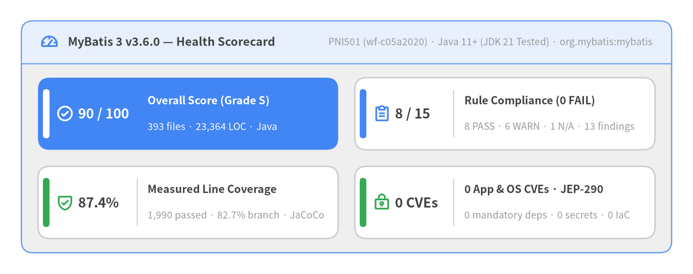
Source Code
from drawlib.canvas import save, setup
from drawlib.icons import phosphor
from drawlib.smartarts import KpiCards, Panel
from drawlib.styles import Colors, Styles
setup(width=146, height=58, dpi=150)
white_card = Styles.Neutral.patch(shape_fill_color=Colors.White)
outer = Panel(
"MyBatis 3 v3.6.0 — Health Scorecard",
"PNI501 (wf-c05a2020) · Java 11+ (JDK 21 Tested) · org.mybatis:mybatis",
style=Styles.Neutral,
header_style=Styles.PrimaryNeutral.patch(shape_line_width=1.2),
text_style=Styles.DarkBold.patch(text_size=12.0),
description_style=Styles.Muted.patch(text_size=10.0),
icon=phosphor.gauge,
icon_style=Styles.PrimaryBold,
header_variant="filled",
header_height=9.0,
)
outer.draw((4.5, 4.5), width=137.0, height=49.0, align="bottom_left")
inner_xy, inner_w, inner_h = outer.get_content_box(
(4.5, 4.5),
width=137.0,
height=49.0,
padding=(3.5, 3.0),
align="bottom_left",
)
kpis = KpiCards(
style=white_card,
metric_style=Styles.DarkBold.patch(text_size=14.0),
text_style=Styles.DarkBold.patch(text_size=11.2),
description_style=Styles.Muted.patch(text_size=10.0),
accent_style=Styles.PrimaryFlat,
icon_style=Styles.PrimaryBold,
accent_position="left_pill",
metric_layout="left_column",
metric_width_ratio=0.30,
spacing=3.5,
)
kpis.add(
"90 / 100",
"Overall Score (Grade S)",
"393 files · 23,364 LOC · Java",
style=Styles.PrimaryFlat,
metric_style=Styles.WhiteBold.patch(text_size=14.0),
text_style=Styles.WhiteBold.patch(text_size=11.2),
description_style=Styles.White.patch(text_size=10.0),
accent_style=Styles.WhiteFlat,
icon=phosphor.check_circle,
icon_style=Styles.WhiteBold,
)
kpis.add(
"8 / 15",
"Rule Compliance (0 FAIL)",
"8 PASS · 6 WARN · 1 N/A · 13 findings",
accent_style=Styles.PrimaryFlat,
icon=phosphor.clipboard_text,
icon_style=Styles.PrimaryBold,
)
kpis.add(
"87.4%",
"Measured Line Coverage",
"1,990 passed · 82.7% branch · JaCoCo",
accent_style=Styles.SuccessFlat,
icon=phosphor.shield_check,
icon_style=Styles.SuccessBold,
)
kpis.add(
"0 CVEs",
"0 App & OS CVEs · JEP-290",
"0 mandatory deps · 0 secrets · 0 IaC",
accent_style=Styles.SuccessFlat,
icon=phosphor.lock_key,
icon_style=Styles.SuccessBold,
)
kpis.draw(inner_xy, width=inner_w, height=inner_h, columns=2, align="bottom_left")
save()
| Diagnostic Attribute | Verified Metadata & Audit Baseline |
|---|---|
| Target Project | mybatis3 (v3.6.0, tag mybatis-3.6.0 / commit 73a0c5d4, Maven org.mybatis:mybatis, Java 11+) |
| Target Language & Profile | java (library — SQL mapper & relational persistence framework over standard JDBC) |
| Upstream License & Attribution | Apache License 2.0 (LICENSE-MYBATIS & NOTICE; Copyright © 2009–2026 MyBatis.org) |
| Diagnostic Workflow | pni501 (Workflow Run ID wf-c05a2020, category audit) |
| Evaluated At | 2026-11-10T03:44:29+00:00 (2026-11-10T03:44:29.163937+00:00) |
| Overall Score & Grade | 90 / 100 (Grade S) — 8 / 15 rules PASS, 6 WARN, 0 FAIL, 1 NOT_APPLICABLE (13 raw findings across 12 unique locations: 0 CRITICAL, 0 HIGH, 3 MEDIUM, 9 LOW, 1 INFO) |
| Analyzed Codebase Scope | 393 Java source files (23,364 LOC, 374 classes, 2,721 methods across 20 packages) & 372 JUnit 5 test files (1,990 passed, 0 failed under --network=none) |
Unofficial Engineering Showcase Notice: This diagnostic report is an independent automated analysis generated with PNI501 and Drawlib to study MyBatis 3's architecture and software engineering quality, and is not affiliated with or endorsed by the official MyBatis project.
1. Executive Summary
MyBatis 3 (v3.6.0, Maven artifact org.mybatis:mybatis) achieves an overall PNI501 engineering score of 90/100 (Grade S) across a 15-stage static Java AST, package dependency DAG, library hygiene, hermetic Maven/JUnit 5 container runtime, and Trivy supply-chain audit. Across 393 Java source files (23,364 LOC, 374 classes, 2,721 methods) and 372 JUnit 5 test files, the framework demonstrates 100.0% import hygiene, 99.9% generic type coverage, zero mandatory runtime dependencies (with OGNL 3.4.16 and Javassist 3.33.0-GA shaded into org.apache.ibatis.*), zero Trivy CVEs, and 100% offline test reliability (1,990 passed, 0 failed) with 87.4% measured JaCoCo line coverage and 82.7% branch coverage.
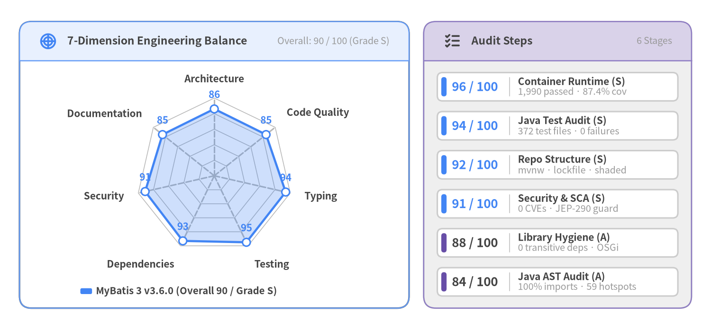
Source Code
from drawlib.canvas import save, setup
from drawlib.charts.radar import RadarChart
from drawlib.icons import phosphor
from drawlib.smartarts import KpiCards, Panel
from drawlib.styles import Colors, Styles
setup(width=146, height=68, dpi=150)
white_card = Styles.Neutral.patch(shape_fill_color=Colors.White)
left_panel = Panel(
"7-Dimension Engineering Balance",
"Overall: 90 / 100 (Grade S)",
style=Styles.White,
header_style=Styles.PrimaryNeutral.patch(shape_line_width=1.2),
text_style=Styles.DarkBold.patch(text_size=11.0),
description_style=Styles.Muted.patch(text_size=9.5),
icon=phosphor.chart_polar,
icon_style=Styles.PrimaryBold,
header_variant="filled",
header_height=8.0,
)
left_panel.draw((4.0, 4.5), width=80.0, height=59.0, align="bottom_left")
l_xy, l_w, l_h = left_panel.get_content_box(
(4.0, 4.5),
width=80.0,
height=59.0,
padding=(2.5, 2.0),
align="bottom_left",
)
radar = RadarChart(
categories=[
"Architecture",
"Code Quality",
"Typing",
"Testing",
"Dependencies",
"Security",
"Documentation",
],
axis_line_style=Styles.MutedDashed,
axis_text_style=Styles.DarkBold.patch(text_size=10.0),
grid_style=Styles.MutedThin,
value_text_style=Styles.PrimaryBold.patch(text_size=10.0),
radius=16.0,
width=l_w,
height=l_h - 3.5,
min_value=0.0,
max_value=100.0,
levels=5,
grid_shape="polygon",
value_format="{:.0f}",
)
radar.add_series(
"MyBatis 3 v3.6.0 (Overall 90 / Grade S)",
[86, 85, 94, 95, 93, 91, 85],
style=Styles.PrimaryFlat,
fill_alpha=0.26,
line_width=2.2,
)
radar.draw(xy=(l_xy[0], l_xy[1] + 3.5))
radar.draw_legend(
xy=(l_xy[0] + 10.0, l_xy[1] + 1.5),
text_style=Styles.DarkBold.patch(text_size=9.8),
orientation="horizontal",
)
right_panel = Panel(
"Audit Steps",
"6 Stages",
style=Styles.Neutral,
header_style=Styles.SecondaryNeutral.patch(shape_line_width=1.2),
text_style=Styles.DarkBold.patch(text_size=11.0),
description_style=Styles.Muted.patch(text_size=9.5),
icon=phosphor.list_checks,
icon_style=Styles.DarkBold,
header_variant="filled",
header_height=8.0,
)
right_panel.draw((87.0, 4.5), width=55.0, height=59.0, align="bottom_left")
r_xy, r_w, r_h = right_panel.get_content_box(
(87.0, 4.5), width=55.0, height=59.0, padding=(2.8, 2.5), align="bottom_left"
)
step_kpis = KpiCards(
style=white_card,
metric_style=Styles.PrimaryBold.patch(text_size=12.5),
text_style=Styles.DarkBold.patch(text_size=10.0),
description_style=Styles.Muted.patch(text_size=9.5),
accent_style=Styles.PrimaryFlat,
accent_position="left_pill",
metric_layout="left_column",
metric_width_ratio=0.30,
spacing=2.2,
)
step_kpis.add("96 / 100", "Container Runtime (S)", "1,990 passed · 87.4% cov")
step_kpis.add("94 / 100", "Java Test Audit (S)", "372 test files · 0 failures")
step_kpis.add("92 / 100", "Repo Structure (S)", "mvnw · lockfile · shaded")
step_kpis.add("91 / 100", "Security & SCA (S)", "0 CVEs · JEP-290 guard")
step_kpis.add(
"88 / 100",
"Library Hygiene (A)",
"0 transitive deps · OSGi",
accent_style=Styles.SecondaryFlat,
metric_style=Styles.DarkBold.patch(text_size=12.5),
)
step_kpis.add(
"84 / 100",
"Java AST Audit (A)",
"100% imports · 59 hotspots",
accent_style=Styles.SecondaryFlat,
metric_style=Styles.DarkBold.patch(text_size=12.5),
)
step_kpis.draw(xy=r_xy, width=r_w, height=r_h, columns=1, align="bottom_left")
save()
1.1 Headline Engineering KPIs, Key Strengths & Top Risks
The seven-axis diagnostic profile reflects a battle-tested Java library whose core design choices—zero mandatory runtime dependencies, compile-time XML/annotation lowering into MappedStatement registries, and strict separation between thread-safe Configuration metadata and thread-confined SqlSession/Executor instances—have scaled cleanly across more than a decade of enterprise adoption.
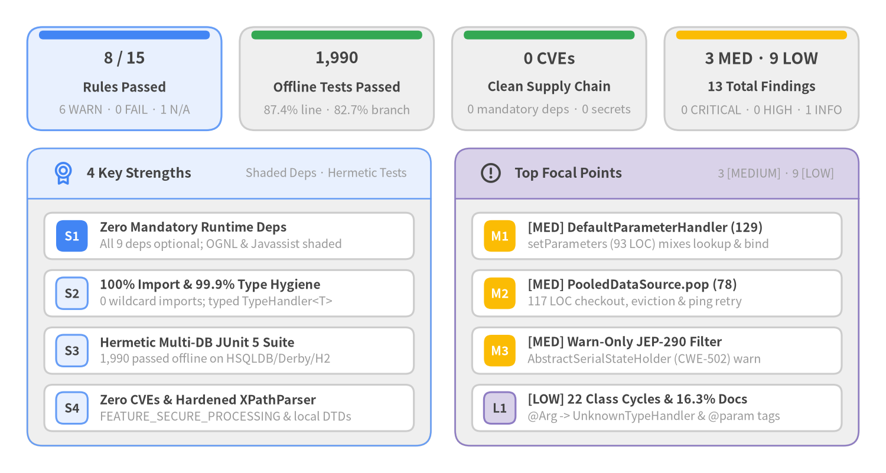
Source Code
from drawlib.canvas import save, setup
from drawlib.icons import phosphor
from drawlib.smartarts import CardList, KpiCards, Panel
from drawlib.styles import Colors, Styles
setup(width=146, height=78, dpi=150)
white_card = Styles.Neutral.patch(shape_fill_color=Colors.White)
top_kpis = KpiCards(
style=Styles.Neutral,
metric_style=Styles.DarkBold.patch(text_size=13.0),
text_style=Styles.DarkBold.patch(text_size=10.5),
description_style=Styles.Muted.patch(text_size=9.8),
accent_style=Styles.PrimaryFlat,
accent_position="top_bar",
metric_layout="top_stack",
spacing=3.0,
)
top_kpis.add(
"8 / 15",
"Rules Passed",
"6 WARN · 0 FAIL · 1 N/A",
style=Styles.PrimaryNeutral,
accent_style=Styles.PrimaryFlat,
)
top_kpis.add(
"1,990",
"Offline Tests Passed",
"87.4% line · 82.7% branch",
accent_style=Styles.SuccessFlat,
)
top_kpis.add(
"0 CVEs",
"Clean Supply Chain",
"0 mandatory deps · 0 secrets",
accent_style=Styles.SuccessFlat,
)
top_kpis.add(
"3 MED · 9 LOW",
"13 Total Findings",
"0 CRITICAL · 0 HIGH · 1 INFO",
accent_style=Styles.WarningFlat,
)
top_kpis.draw((4.5, 56.5), width=137.0, height=17.0, columns=4, align="bottom_left")
left_panel = Panel(
"4 Key Strengths",
"Shaded Deps · Hermetic Tests",
style=Styles.Neutral,
header_style=Styles.PrimaryNeutral.patch(shape_line_width=1.2),
text_style=Styles.DarkBold.patch(text_size=11.0),
description_style=Styles.Muted.patch(text_size=9.5),
icon=phosphor.medal,
icon_style=Styles.PrimaryBold,
header_variant="filled",
header_height=8.2,
)
left_panel.draw((4.5, 4.5), width=66.5, height=49.0, align="bottom_left")
l_xy, l_w, l_h = left_panel.get_content_box(
(4.5, 4.5), width=66.5, height=49.0, padding=(2.8, 2.4), align="bottom_left"
)
strengths = CardList(
style=white_card,
text_style=Styles.DarkBold.patch(text_size=10.2),
description_style=Styles.Muted.patch(text_size=9.6),
badge_shape="rounded_rect",
badge_style=Styles.PrimaryNeutral,
badge_text_style=Styles.DarkBold.patch(text_size=10.0),
direction="vertical",
spacing=1.8,
)
strengths.add(
"Zero Mandatory Runtime Deps",
"All 9 deps optional; OGNL & Javassist shaded",
badge_text="S1",
badge_style=Styles.PrimaryFlat,
badge_text_style=Styles.WhiteBold.patch(text_size=10.0),
)
strengths.add(
"100% Import & 99.9% Type Hygiene",
"0 wildcard imports; typed TypeHandler<T>",
badge_text="S2",
)
strengths.add(
"Hermetic Multi-DB JUnit 5 Suite",
"1,990 passed offline on HSQLDB/Derby/H2",
badge_text="S3",
)
strengths.add(
"Zero CVEs & Hardened XPathParser",
"FEATURE_SECURE_PROCESSING & local DTDs",
badge_text="S4",
)
strengths.draw(l_xy, width=l_w, height=l_h, align="bottom_left")
right_panel = Panel(
"Top Focal Points",
"3 [MEDIUM] · 9 [LOW]",
style=Styles.Neutral,
header_style=Styles.SecondaryNeutral.patch(shape_line_width=1.2),
text_style=Styles.DarkBold.patch(text_size=11.0),
description_style=Styles.Muted.patch(text_size=9.5),
icon=phosphor.warning_circle,
icon_style=Styles.WarningBold,
header_variant="filled",
header_height=8.2,
)
right_panel.draw((75.0, 4.5), width=66.5, height=49.0, align="bottom_left")
r_xy, r_w, r_h = right_panel.get_content_box(
(75.0, 4.5), width=66.5, height=49.0, padding=(2.8, 2.4), align="bottom_left"
)
risks = CardList(
style=white_card,
text_style=Styles.DarkBold.patch(text_size=10.2),
description_style=Styles.Muted.patch(text_size=9.6),
badge_shape="rounded_rect",
badge_style=Styles.SecondaryNeutral,
badge_text_style=Styles.DarkBold.patch(text_size=10.0),
direction="vertical",
spacing=1.8,
)
risks.add(
"[MED] DefaultParameterHandler (129)",
"setParameters (93 LOC) mixes lookup & bind",
badge_text="M1",
badge_style=Styles.WarningFlat,
badge_text_style=Styles.WhiteBold.patch(text_size=10.0),
)
risks.add(
"[MED] PooledDataSource.pop (78)",
"117 LOC checkout, eviction & ping retry",
badge_text="M2",
badge_style=Styles.WarningFlat,
badge_text_style=Styles.WhiteBold.patch(text_size=10.0),
)
risks.add(
"[MED] Warn-Only JEP-290 Filter",
"AbstractSerialStateHolder (CWE-502) warn",
badge_text="M3",
badge_style=Styles.WarningFlat,
badge_text_style=Styles.WhiteBold.patch(text_size=10.0),
)
risks.add(
"[LOW] 22 Class Cycles & 16.3% Docs",
"@Arg -> UnknownTypeHandler & @param tags",
badge_text="L1",
)
risks.draw(r_xy, width=r_w, height=r_h, align="bottom_left")
save()
Summary of 7-Dimension Scores & Rationales
| Dimension | Score | Grade | Key Quantitative Evidence & Architectural Rationale |
|---|---|---|---|
| Testing | 95 / 100 | S | 372 JUnit 5 test files (1,918 AST methods, 2,009 runtime executions); 1,990 passed, 0 failed, 0 errors offline (--network=none) in 108.88s; 87.4% line (9,985/11,418) and 82.7% branch coverage via JaCoCo 0.8.15. |
| Typing | 94 / 100 | S | 99.9% generic type safety coverage across 2,721 methods; only 2 raw generic signatures (LruCache.java:53, OgnlClassResolver.java:32); 248 Object/@SuppressWarnings("unchecked") usages confined to reflection/proxy boundaries. |
| Dependencies | 93 / 100 | S | 9 pinned optional/provided dependencies in pom.xml; maven-shade-plugin relocates ognl:3.4.16 and javassist:3.33.0-GA into org.apache.ibatis.*; reproducible mvnw, dependencies-lock.json, and project.build.outputTimestamp. |
| Security | 91 / 100 | S | 0 Trivy CVEs (CRITICAL=0, HIGH=0, MEDIUM=0, LOW=0), 0 secrets, 0 IaC misconfigs; hardened XPathParser (FEATURE_SECURE_PROCESSING=true); SerialFilterChecker.check() warns on missing JEP-290 jdk.serialFilter (CWE-502). |
| Architecture | 86 / 100 | A | Cohesive 3-tier layout across 20 packages under org.apache.ibatis.* using Decorator, Template Method, Composite, and Dynamic Proxy patterns; 22 class-level cycles (4 cross-package via @Arg -> UnknownTypeHandler -> Configuration). |
| Code Quality | 85 / 100 | A | 100.0% import hygiene (0 wildcard imports across 393 files); 59 complex methods led by DefaultParameterHandler.setParameters (cognitive=129) and PooledDataSource.popConnection (cognitive=78), plus 17 methods with >6 parameters. |
| Documentation | 85 / 100 | A | 20/20 package-info.java descriptors, structured src/site/ documentation, and README.md, offset by 16.3% inline public Javadoc coverage and 24 @param tag mismatches in AbstractSQL.java and ResolverUtil.java. |
2. Architecture & Source Code Structure
MyBatis 3 (v3.6.0) organizes 393 Java source files (23,364 LOC, 374 classes, 2,721 methods) across 20 packages under org.apache.ibatis.* into a 3-Tier Layered Data-Mapper & Interceptor Pipeline Architecture (86/100, Grade A). Rather than imposing an invasive entity state manager like full JPA/Hibernate ORMs, MyBatis compiles XML descriptors (mybatis-config.xml, *Mapper.xml) and Java interface annotations (@Select, @Insert, @Results) at bootstrap time into immutable MappedStatement and ResultMap registries inside Configuration, and executes SQL through a composable Executor -> StatementHandler -> ParameterHandler -> ResultSetHandler pipeline.
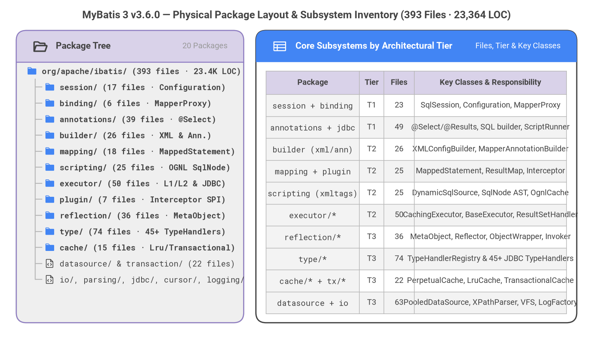
Source Code
from drawlib.canvas import save, setup
from drawlib.fonts import FontMonoSpace, FontRoboto
from drawlib.icons import phosphor
from drawlib.smartarts import Panel, Table, TreeNode
from drawlib.styles import Colors, Styles
from drawlib.text import text
setup(width=146, height=84, dpi=150)
text(
(73.0, 80.2),
"MyBatis 3 v3.6.0 — Physical Package Layout & Subsystem Inventory (393 Files · 23,364 LOC)",
style=Styles.DarkBold.patch(text_font=FontRoboto.ROBOTO_BOLD, text_size=12.5),
)
left_panel = Panel(
"Package Tree",
"20 Packages",
style=Styles.Neutral,
header_style=Styles.SecondaryNeutral.patch(shape_line_width=1.2),
text_style=Styles.DarkBold.patch(text_font=FontRoboto.ROBOTO_BOLD, text_size=10.8),
description_style=Styles.Muted.patch(text_font=FontRoboto.ROBOTO_REGULAR, text_size=9.5),
icon=phosphor.folder_open,
icon_style=Styles.DarkBold,
header_variant="filled",
header_height=7.8,
)
left_panel.draw((4.0, 4.5), width=56.0, height=72.0, align="bottom_left")
TreeNode.register_drawing_item(
name="pkg_dir",
location="before",
padding_width=3.8,
function=phosphor.folder,
style=Styles.Primary.patch(icon_color=Colors.Primary, icon_style="fill"),
args={"width": 2.7},
)
TreeNode.register_drawing_item(
name="java_mod",
location="before",
padding_width=3.8,
function=phosphor.file_code,
style=Styles.Dark.patch(icon_color=Colors.Dark),
args={"width": 2.6},
)
root = TreeNode(
"org/apache/ibatis/ (393 files · 23.4K LOC)",
text_style=Styles.DarkBold.patch(text_font=FontMonoSpace.ROBOTO_MONO_BOLD, text_size=9.5),
line_style=Styles.Muted.patch(line_width=1.1),
line_horizontal_margin=2.2,
line_horizontal_length=2.4,
line_vertical_margin=3.95,
).set_drawing_item("pkg_dir")
mod_text = Styles.Dark.patch(text_font=FontMonoSpace.ROBOTO_MONO_REGULAR, text_size=9.5)
sub_text = Styles.DarkBold.patch(text_font=FontMonoSpace.ROBOTO_MONO_BOLD, text_size=9.5)
root.add("session/ (17 files · Configuration)", text_style=sub_text).set_drawing_item("pkg_dir")
root.add("binding/ (6 files · MapperProxy)", text_style=sub_text).set_drawing_item("pkg_dir")
root.add("annotations/ (39 files · @Select)", text_style=sub_text).set_drawing_item("pkg_dir")
root.add("builder/ (26 files · XML & Ann.)", text_style=sub_text).set_drawing_item("pkg_dir")
root.add("mapping/ (18 files · MappedStatement)", text_style=sub_text).set_drawing_item("pkg_dir")
root.add("scripting/ (25 files · OGNL SqlNode)", text_style=sub_text).set_drawing_item("pkg_dir")
root.add("executor/ (50 files · L1/L2 & JDBC)", text_style=sub_text).set_drawing_item("pkg_dir")
root.add("plugin/ (7 files · Interceptor SPI)", text_style=sub_text).set_drawing_item("pkg_dir")
root.add("reflection/ (36 files · MetaObject)", text_style=sub_text).set_drawing_item("pkg_dir")
root.add("type/ (74 files · 45+ TypeHandlers)", text_style=sub_text).set_drawing_item("pkg_dir")
root.add("cache/ (15 files · Lru/Transactional)", text_style=sub_text).set_drawing_item("pkg_dir")
root.add("datasource/ & transaction/ (22 files)", text_style=mod_text).set_drawing_item("java_mod")
root.add("io/, parsing/, jdbc/, cursor/, logging/", text_style=mod_text).set_drawing_item("java_mod")
root.draw(xy=(6.5, 66.5))
right_panel = Panel(
"Core Subsystems by Architectural Tier",
"Files, Tier & Key Classes",
style=Styles.White,
header_style=Styles.PrimaryFlat,
text_style=Styles.WhiteBold.patch(text_font=FontRoboto.ROBOTO_BOLD, text_size=10.8),
description_style=Styles.White.patch(text_font=FontRoboto.ROBOTO_REGULAR, text_size=9.5),
icon=phosphor.table,
icon_style=Styles.White,
header_variant="filled",
header_height=7.8,
)
right_panel.draw((63.0, 4.5), width=79.0, height=72.0, align="bottom_left")
tbl_body = Styles.Dark.patch(text_font=FontRoboto.ROBOTO_REGULAR, text_size=9.5)
tbl_code = Styles.DarkBold.patch(text_font=FontMonoSpace.ROBOTO_MONO_REGULAR, text_size=9.5)
tbl_hdr = Styles.DarkBold.patch(text_font=FontRoboto.ROBOTO_BOLD, text_size=9.8)
tbl = Table(
cell_style=Styles.White,
text_style=tbl_body,
header_cell_style=Styles.SecondaryNeutral,
header_text_style=tbl_hdr,
border_style=Styles.MutedThin,
)
tbl.set_style_cell_evenodd(
even_color=Colors.Light,
even_text_style=tbl_body,
odd_color=Colors.White,
odd_text_style=tbl_body,
)
tbl.set_style_cell_header(
background_color=Colors.SecondaryNeutral,
text_style=tbl_hdr,
)
tbl.set_style_cell(
background_color=Colors.Light,
text_style=tbl_code,
rows=[1, 2, 3, 4, 5, 6, 7, 8, 9, 10],
columns=[0],
)
inventory_rows = [
["Package", "Tier", "Files", "Key Classes & Responsibility"],
["session + binding", "T1", "23", "SqlSession, Configuration, MapperProxy"],
["annotations + jdbc", "T1", "49", "@Select/@Results, SQL builder, ScriptRunner"],
["builder (xml/ann)", "T2", "26", "XMLConfigBuilder, MapperAnnotationBuilder"],
["mapping + plugin", "T2", "25", "MappedStatement, ResultMap, Interceptor"],
["scripting (xmltags)", "T2", "25", "DynamicSqlSource, SqlNode AST, OgnlCache"],
["executor/*", "T2", "50", "CachingExecutor, BaseExecutor, ResultSetHandler"],
["reflection/*", "T3", "36", "MetaObject, Reflector, ObjectWrapper, Invoker"],
["type/*", "T3", "74", "TypeHandlerRegistry & 45+ JDBC TypeHandlers"],
["cache/* + tx/*", "T3", "22", "PerpetualCache, LruCache, TransactionalCache"],
["datasource + io", "T3", "63", "PooledDataSource, XPathParser, VFS, LogFactory"],
]
tbl.draw_flexible(
xy=(65.5, 66.5),
column_widths=[23.0, 6.0, 7.5, 37.5],
row_heights=[5.8] + [5.4] * 10,
data=inventory_rows,
align="top_left",
)
save()
2.1 3-Tier Package Topology & Thermal Risk Heatmap Overlay
MyBatis 3's 20 packages stratify into three architectural tiers:
- Tier 1 — Public Session, Annotation & Dynamic Proxy Binding Layer (
session,binding,annotations,cursor,jdbc): ExposesSqlSessionFactoryBuilder,SqlSessionFactory,SqlSession,MapperRegistry, andMapperProxyFactory<T>. - Tier 2 — Core Configuration Builder, Mapping, Scripting & Executor Layer (
builder,mapping,scripting,executor,plugin): Compiles XML and annotation mappers intoMappedStatement/ResultMapinstances, evaluates OGNLSqlNodetrees intoBoundSql, and orchestrates L1/L2 cached JDBC execution wrapped byPlugin.wrap()interceptor chains. - Tier 3 — Foundation Reflection, Type, Cache, Transaction & IO Layer (
reflection,type,cache,transaction,datasource,parsing,io,logging,exceptions): Provides self-contained infrastructure (MetaObject,Reflector,TypeHandlerRegistry,PerpetualCachedecorators,PooledDataSource,XPathParser,VFS,LogFactory).
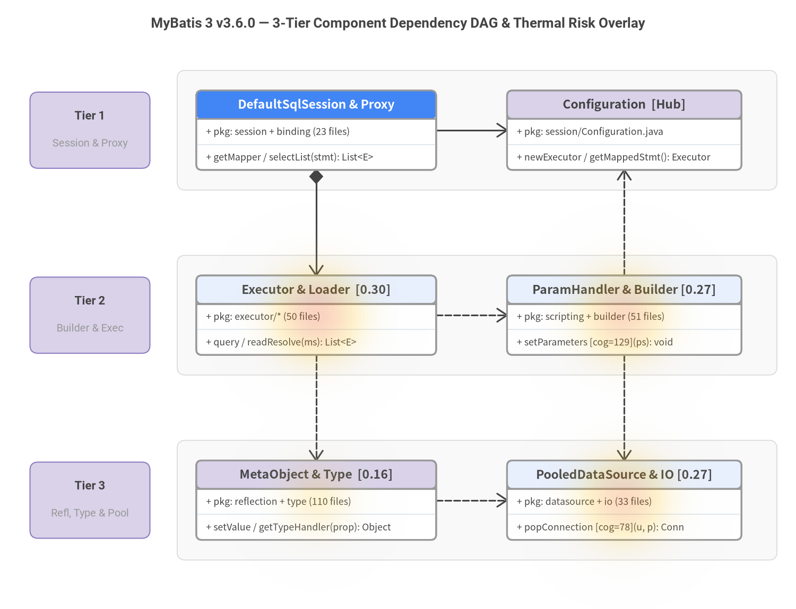
Source Code
from drawlib.canvas import save, setup
from drawlib.charts.heatmap import HeatmapOverlay
from drawlib.diagrams.class_diagram import ClassDiagram, ClassNode
from drawlib.fonts import FontMonoSpace, FontRoboto
from drawlib.shapes import rectangle
from drawlib.styles import Colors, Styles
from drawlib.text import text
setup(width=146, height=112, dpi=150)
text(
(73.0, 107.5),
"MyBatis 3 v3.6.0 — 3-Tier Component Dependency DAG & Thermal Risk Overlay",
style=Styles.DarkBold.patch(text_font=FontRoboto.ROBOTO_BOLD, text_size=12.5),
)
tier_specs = [
(88.0, "Tier 1", "Session & Proxy"),
(54.0, "Tier 2", "Builder & Exec"),
(20.0, "Tier 3", "Refl, Type & Pool"),
]
lane_style = Styles.Neutral.patch(
shape_fill_color=Colors.Gray1.patch(alpha=0.45),
shape_line_color=Colors.Gray3,
shape_line_width=0.8,
shape_r=1.5,
)
badge_style = Styles.SecondaryNeutral.patch(shape_r=1.5, shape_line_width=1.0)
for cy, t_num, t_sub in tier_specs:
rectangle((87.5, cy), width=110.0, height=22.0, style=lane_style)
rectangle((16.5, cy), width=22.0, height=14.0, style=badge_style)
text(
(16.5, cy + 2.5),
t_num,
style=Styles.DarkBold.patch(text_font=FontRoboto.ROBOTO_BOLD, text_size=10.5),
)
text(
(16.5, cy - 2.5),
t_sub,
style=Styles.Muted.patch(text_font=FontRoboto.ROBOTO_REGULAR, text_size=9.5),
)
cd = ClassDiagram(
width=146.0,
height=112.0,
node_style=Styles.Neutral.patch(
shape_fill_color=Colors.White,
shape_line_color=Colors.Gray6,
text_color=Colors.Dark,
text_font=FontMonoSpace.ROBOTO_MONO_REGULAR,
text_size=9.5,
),
header_style=Styles.PrimaryNeutral.patch(
shape_line_color=Colors.Gray6,
text_color=Colors.Dark,
text_font=FontRoboto.ROBOTO_BOLD,
text_size=10.0,
),
edge_style=Styles.Dark.patch(line_width=1.5),
edge_text_style=Styles.DarkBold.patch(text_font=FontRoboto.ROBOTO_BOLD, text_size=9.5),
)
hero_hdr = Styles.PrimaryFlat.patch(
text_color=Colors.White,
text_font=FontRoboto.ROBOTO_BOLD,
text_size=10.0,
)
sec_hdr = Styles.SecondaryNeutral.patch(
shape_line_color=Colors.Gray6,
text_color=Colors.Dark,
text_font=FontRoboto.ROBOTO_BOLD,
text_size=10.0,
)
# Tier 1 (cy=88.0)
n_session = cd.add(
ClassNode("DefaultSqlSession & Proxy", width=44.0, header_style=hero_hdr)
.add_attribute("pkg", "session + binding (23 files)")
.add_method("getMapper / selectList", "stmt", "List<E>"),
xy=(58.0, 88.0),
)
n_config = cd.add(
ClassNode("Configuration [Hub]", width=43.0, header_style=sec_hdr)
.add_attribute("pkg", "session/Configuration.java")
.add_method("newExecutor / getMappedStmt", "", "Executor"),
xy=(114.5, 88.0),
)
# Tier 2 (cy=54.0)
n_exec = cd.add(
ClassNode("Executor & Loader [0.30]", width=44.0)
.add_attribute("pkg", "executor/* (50 files)")
.add_method("query / readResolve", "ms", "List<E>"),
xy=(58.0, 54.0),
)
n_script = cd.add(
ClassNode("ParamHandler & Builder [0.27]", width=43.0)
.add_attribute("pkg", "scripting + builder (51 files)")
.add_method("setParameters [cog=129]", "ps", "void"),
xy=(114.5, 54.0),
)
# Tier 3 (cy=20.0)
n_refl = cd.add(
ClassNode("MetaObject & Type [0.16]", width=44.0, header_style=sec_hdr)
.add_attribute("pkg", "reflection + type (110 files)")
.add_method("setValue / getTypeHandler", "prop", "Object"),
xy=(58.0, 20.0),
)
n_pool = cd.add(
ClassNode("PooledDataSource & IO [0.27]", width=43.0)
.add_attribute("pkg", "datasource + io (33 files)")
.add_method("popConnection [cog=78]", "u, p", "Conn"),
xy=(114.5, 20.0),
)
cd.connect(n_session, n_config, "association", directed=True, start_side="right", end_side="left")
cd.connect(n_session, n_exec, "composition", directed=True, start_side="bottom", end_side="top")
cd.connect(n_script, n_config, "dependency", start_side="top", end_side="bottom")
cd.connect(n_exec, n_script, "dependency", start_side="right", end_side="left")
cd.connect(n_exec, n_refl, "dependency", start_side="bottom", end_side="top")
cd.connect(n_script, n_pool, "dependency", start_side="bottom", end_side="top")
cd.connect(n_refl, n_pool, "dependency", start_side="right", end_side="left")
cd.draw(xy=(0.0, 0.0))
overlay = HeatmapOverlay(
styles=[Styles.PrimaryNeutral, Styles.WarningFlat, Styles.DangerFlat],
width=146.0,
height=112.0,
mode="smooth",
min_value=0.0,
max_value=0.35,
max_alpha=0.32,
show_contour_lines=False,
)
overlay.add_spot(n_exec, value=0.30, radius=18.0)
overlay.add_spot(n_script, value=0.27, radius=18.0)
overlay.add_spot(n_pool, value=0.27, radius=18.0)
overlay.add_spot(n_refl, value=0.16, radius=15.0)
overlay.draw(xy=(0.0, 0.0))
save()
Pre-Sorted Module Hotspots (HeatmapOverlay Exact Risk Scores)
| Module Path | LOC | Risk Score | Findings | Triggered Rules & Primary Risk Driver |
|---|---|---|---|---|
src/main/java/org/apache/ibatis/executor/loader/cglib/CglibProxyFactory.java |
174 |
0.30 |
1 (info) |
common/runtime_verification — Deprecated legacy CGLIB proxy factory (0.0% coverage on JDK 21 due to RequireIllegalAccess exclusion) |
src/main/java/org/apache/ibatis/datasource/pooled/PooledDataSource.java |
445 |
0.27 |
1 (medium) |
common/maintainability — popConnection has cognitive complexity 78 (117 lines, 21 branches) |
src/main/java/org/apache/ibatis/scripting/defaults/DefaultParameterHandler.java |
171 |
0.27 |
1 (medium) |
common/maintainability — setParameters has cognitive complexity 129 (93 lines, 22 branches) |
src/main/java/org/apache/ibatis/executor/loader/AbstractSerialStateHolder.java |
94 |
0.27 |
1 (medium) |
common/security_vulnerability — ObjectInputStream deserialization (CWE-502) guarded by warn-only SerialFilterChecker.check() |
src/main/java/org/apache/ibatis/io/SerialFilterChecker.java |
30 |
0.20 |
1 (low) |
common/security_vulnerability — Logs one-time warning when JEP-290 jdk.serialFilter is unset; static firstInvocation flag |
src/main/java/org/apache/ibatis/logging/log4j2/Log4j2LoggerImpl.java |
41 |
0.16 |
0 |
Fallback non-LocationAware Log4j2 logger implementation (0.0% default test coverage) |
src/main/java/org/apache/ibatis/reflection/Jdk.java |
39 |
0.16 |
0 |
Legacy deprecated JDK capability flags (0.0% coverage) |
src/main/java/org/apache/ibatis/logging/slf4j/Slf4jLoggerImpl.java |
37 |
0.16 |
0 |
Fallback non-LocationAwareLogger SLF4J wrapper (0.0% default test coverage) |
2.2 End-to-End Runtime Execution Flows & Concurrency Model
MyBatis 3 separates its runtime into three primary execution flows: (1) Bootstrap Compilation (SqlSessionFactoryBuilder -> XMLConfigBuilder / MapperAnnotationBuilder -> Configuration), (2) Mapper Proxy & L1/L2 Cache Query Execution (MapperProxy -> MapperMethod -> DefaultSqlSession -> CachingExecutor -> BaseExecutor -> PreparedStatementHandler), and (3) ResultSet Hydration & Lazy Proxy Loading (DefaultResultSetHandler -> MetaObject / Reflector / JavassistProxyFactory).
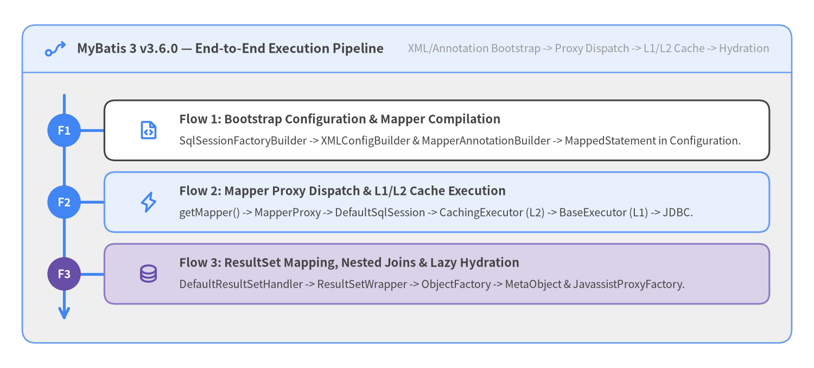
Source Code
from drawlib.canvas import save, setup
from drawlib.icons import phosphor
from drawlib.smartarts import Panel, Roadmap
from drawlib.styles import Styles
setup(width=146, height=66, dpi=150)
panel = Panel(
"MyBatis 3 v3.6.0 — End-to-End Execution Pipeline",
"XML/Annotation Bootstrap -> Proxy Dispatch -> L1/L2 Cache -> Hydration",
style=Styles.Neutral,
header_style=Styles.PrimaryNeutral.patch(shape_line_width=1.2),
text_style=Styles.DarkBold.patch(text_size=11.2),
description_style=Styles.Muted.patch(text_size=9.6),
icon=phosphor.flow_arrow,
icon_style=Styles.PrimaryBold,
header_variant="filled",
header_height=8.5,
)
panel.draw((4.0, 4.5), width=138.0, height=57.0, align="bottom_left")
inner_xy, inner_w, inner_h = panel.get_content_box(
(4.0, 4.5), width=138.0, height=57.0, padding=(3.0, 2.5), align="bottom_left"
)
rm = Roadmap(
style=Styles.White,
text_style=Styles.DarkBold.patch(text_size=10.5),
description_style=Styles.Dark.patch(text_size=9.5),
spine_style=Styles.PrimaryBold,
badge_style=Styles.PrimaryFlat,
badge_text_style=Styles.WhiteBold.patch(text_size=10.0),
icon_style=Styles.PrimaryBold,
direction="vertical",
curve_bend=0.0,
card_shape="rounded_rect",
spacing=2.6,
)
rm.add(
"Flow 1: Bootstrap Configuration & Mapper Compilation",
"SqlSessionFactoryBuilder -> XMLConfigBuilder & MapperAnnotationBuilder -> MappedStatement in Configuration.",
badge_text="F1",
icon=phosphor.file_code,
)
rm.add(
"Flow 2: Mapper Proxy Dispatch & L1/L2 Cache Execution",
"getMapper() -> MapperProxy -> DefaultSqlSession -> CachingExecutor (L2) -> BaseExecutor (L1) -> JDBC.",
badge_text="F2",
icon=phosphor.lightning,
style=Styles.PrimaryNeutral,
)
rm.add(
"Flow 3: ResultSet Mapping, Nested Joins & Lazy Hydration",
"DefaultResultSetHandler -> ResultSetWrapper -> ObjectFactory -> MetaObject & JavassistProxyFactory.",
badge_text="F3",
icon=phosphor.database,
style=Styles.SecondaryNeutral,
badge_style=Styles.SecondaryFlat,
icon_style=Styles.SecondaryBold,
)
rm.draw(xy=inner_xy, width=inner_w, height=inner_h, align="bottom_left")
save()
State Management, Error Translation & Thread-Safety Contract
| Runtime Mechanism | Scope & Concurrency Contract | Key Implementation Classes |
|---|---|---|
Configuration Registry |
Application-scoped (Thread-Safe after bootstrap): Stores StrictMap and ConcurrentHashMap registries of MappedStatement, ResultMap, Cache, TypeHandler, and MapperProxyFactory. |
Configuration, MapperRegistry, DefaultReflectorFactory, OgnlCache |
| L2 Namespace Cache | Application/Namespace-scoped (Transactional): Buffers reads/writes per session inside TransactionalCache (TransactionalCacheManager) and flushes to LruCache / SerializedCache / SynchronizedCache only upon SqlSession.commit(). |
CachingExecutor, TransactionalCacheManager, TransactionalCache, CacheBuilder |
| L1 Local Cache | Request/SqlSession-scoped (Single-Thread Confined): PerpetualCache inside BaseExecutor (SESSION or STATEMENT scope), automatically cleared on any insert/update/delete/commit/rollback. |
BaseExecutor, PerpetualCache, LocalCacheScope |
ErrorContext & Exceptions |
ThreadLocal Breadcrumbs: ErrorContext.instance() records the active XML resource, MappedStatement ID, SQL string, and cause before ExceptionFactory.wrapException() translates checked SQLExceptions into unchecked PersistenceException subclasses. |
ErrorContext, ExceptionFactory, PersistenceException |
3. Recommended Remediation Roadmap
MyBatis 3 v3.6.0 enters remediation planning from a strong 90/100 (Grade S) baseline with zero P0 urgent blockers, zero FAIL compliance rules, and zero CRITICAL or HIGH source-code findings across all 393 Java source files and 1,990 passing offline tests. The 8-item engineering roadmap prioritizes 2 P1 high-value maintainability and deserialization hardening enhancements followed by 6 P2 architectural, documentation, modernization, supply-chain, and test-suite polish actions.
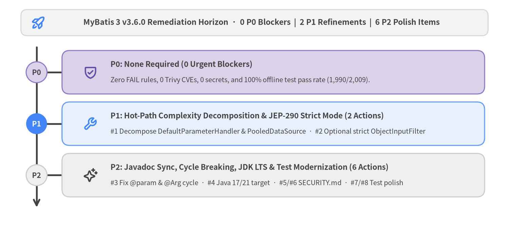
Source Code
from drawlib.canvas import save, setup
from drawlib.icons import phosphor
from drawlib.shapes import rectangle
from drawlib.smartarts import Roadmap
from drawlib.styles import Colors, Styles
from drawlib.text import text
setup(width=146, height=66, dpi=150)
rectangle(
(73.0, 59.5),
width=134.0,
height=7.5,
style=Styles.Neutral.patch(shape_r=1.8, shape_fill_color=Colors.Gray1, shape_line_color=Colors.Gray3),
)
phosphor.rocket_launch((11.0, 59.5), width=4.4, style=Styles.PrimaryBold)
text(
(75.0, 59.5),
"MyBatis 3 v3.6.0 Remediation Horizon · 0 P0 Blockers | 2 P1 Refinements | 6 P2 Polish Items",
style=Styles.DarkBold.patch(text_size=11.0),
)
rm = Roadmap(
style=Styles.Neutral,
text_style=Styles.DarkBold.patch(text_size=10.8),
description_style=Styles.Dark.patch(text_size=9.6),
spine_style=Styles.DarkBold,
badge_style=Styles.SecondaryNeutral,
badge_text_style=Styles.DarkBold.patch(text_size=10.2),
icon_style=Styles.PrimaryBold,
direction="vertical",
curve_bend=0.0,
card_shape="rounded_rect",
spacing=2.8,
)
rm.add(
"P0: None Required (0 Urgent Blockers)",
"Zero FAIL rules, 0 Trivy CVEs, 0 secrets, and 100% offline test pass rate (1,990/2,009).",
badge_text="P0",
icon=phosphor.shield_check,
style=Styles.SecondaryNeutral,
badge_style=Styles.SecondaryNeutral,
badge_text_style=Styles.DarkBold.patch(text_size=10.2),
icon_style=Styles.SecondaryBold,
)
rm.add(
"P1: Hot-Path Complexity Decomposition & JEP-290 Strict Mode (2 Actions)",
"#1 Decompose DefaultParameterHandler & PooledDataSource · #2 Optional strict ObjectInputFilter",
badge_text="P1",
icon=phosphor.wrench,
style=Styles.PrimaryNeutral,
badge_style=Styles.PrimaryFlat,
badge_text_style=Styles.WhiteBold.patch(text_size=10.2),
icon_style=Styles.PrimaryBold,
)
rm.add(
"P2: Javadoc Sync, Cycle Breaking, JDK LTS & Test Modernization (6 Actions)",
"#3 Fix @param & @Arg cycle · #4 Java 17/21 target · #5/#6 SECURITY.md · #7/#8 Test polish",
badge_text="P2",
icon=phosphor.sparkle,
style=Styles.Neutral,
badge_style=Styles.Neutral,
badge_text_style=Styles.DarkBold.patch(text_size=10.2),
icon_style=Styles.DarkBold,
)
rm.draw(xy=(6.0, 5.0), width=134.0, height=49.0, align="bottom_left", scale=1.0)
save()
3.1 Action Plan Traceability Matrix (P0 -> P1 -> P2)
Every remediation item maps directly to existing repository files, expected engineering outcomes, and triggered rule IDs or CWE identifiers (1..8 pre-sorted by priority):
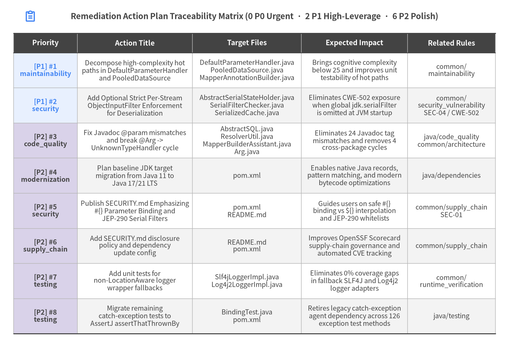
Source Code
from drawlib.canvas import save, setup
from drawlib.icons import phosphor
from drawlib.smartarts import Table
from drawlib.styles import Colors, Styles
from drawlib.text import text
setup(width=168, height=118, dpi=150)
phosphor.clipboard_text((10.0, 112.5), width=4.2, style=Styles.PrimaryBold)
text(
(84.0, 112.5),
"Remediation Action Plan Traceability Matrix (0 P0 Urgent · 2 P1 High-Leverage · 6 P2 Polish)",
style=Styles.DarkBold.patch(text_size=11.5),
)
table = Table(
cell_style=Styles.White,
text_style=Styles.Dark.patch(text_size=9.5),
header_cell_style=Styles.PrimaryFlat,
header_text_style=Styles.WhiteBold.patch(text_size=10.0),
border_style=Styles.MutedThin,
has_header=True,
)
table.set_style_cell_evenodd(
even_color=Colors.Gray1,
even_text_style=Styles.Dark.patch(text_size=9.5),
odd_color=Colors.White,
odd_text_style=Styles.Dark.patch(text_size=9.5),
)
table.set_style_cell_header(
background_color=Colors.Dark,
text_style=Styles.WhiteBold.patch(text_size=10.0),
)
table.set_style_cell(
background_color=Styles.PrimaryNeutral.shape_fill_color,
text_style=Styles.PrimaryBold.patch(text_size=9.5),
rows=[1, 2],
columns=[0],
)
table.set_style_cell(
background_color=Styles.SecondaryNeutral.shape_fill_color,
text_style=Styles.DarkBold.patch(text_size=9.5),
rows=[3, 4, 5, 6, 7, 8],
columns=[0],
)
table.set_style_border(
top=Styles.Dark.patch(line_width=1.4),
top2=Styles.Dark.patch(line_width=1.1),
bottom=Styles.Dark.patch(line_width=1.4),
left=Styles.MutedThin,
right=Styles.MutedThin,
between_columns=Styles.MutedThin,
between_rows=Styles.MutedThin,
)
traceability_rows = [
["Priority", "Action Title", "Target Files", "Expected Impact", "Related Rules"],
[
"[P1] #1\nmaintainability",
"Decompose high-complexity hot\npaths in DefaultParameterHandler\nand PooledDataSource",
"DefaultParameterHandler.java\nPooledDataSource.java\nMapperAnnotationBuilder.java",
"Brings cognitive complexity\nbelow 25 and improves unit\ntestability of hot paths",
"common/\nmaintainability",
],
[
"[P1] #2\nsecurity",
"Add Optional Strict Per-Stream\nObjectInputFilter Enforcement\nfor Deserialization",
"AbstractSerialStateHolder.java\nSerialFilterChecker.java\nSerializedCache.java",
"Eliminates CWE-502 exposure\nwhen global jdk.serialFilter\nis omitted at JVM startup",
"common/\nsecurity_vulnerability\nSEC-04 / CWE-502",
],
[
"[P2] #3\ncode_quality",
"Fix Javadoc @param mismatches\nand break @Arg ->\nUnknownTypeHandler cycle",
"AbstractSQL.java\nResolverUtil.java\nMapperBuilderAssistant.java\nArg.java",
"Eliminates 24 Javadoc tag\nmismatches and removes 4\ncross-package cycles",
"java/code_quality\ncommon/architecture",
],
[
"[P2] #4\nmodernization",
"Plan baseline JDK target\nmigration from Java 11 to\nJava 17/21 LTS",
"pom.xml",
"Enables native Java records,\npattern matching, and modern\nbytecode optimizations",
"java/dependencies",
],
[
"[P2] #5\nsecurity",
"Publish SECURITY.md Emphasizing\n#{} Parameter Binding and\nJEP-290 Serial Filters",
"pom.xml\nREADME.md",
"Guides users on safe #{}\nbinding vs ${} interpolation\nand JEP-290 whitelists",
"common/supply_chain\nSEC-01",
],
[
"[P2] #6\nsupply_chain",
"Add SECURITY.md disclosure\npolicy and dependency\nupdate config",
"README.md\npom.xml",
"Improves OpenSSF Scorecard\nsupply-chain governance and\nautomated CVE tracking",
"common/supply_chain",
],
[
"[P2] #7\ntesting",
"Add unit tests for\nnon-LocationAware logger\nwrapper fallbacks",
"Slf4jLoggerImpl.java\nLog4j2LoggerImpl.java",
"Eliminates 0% coverage gaps\nin fallback SLF4J and Log4j2\nlogger adapters",
"common/\nruntime_verification",
],
[
"[P2] #8\ntesting",
"Migrate remaining\ncatch-exception tests to\nAssertJ assertThatThrownBy",
"BindingTest.java\npom.xml",
"Retires legacy catch-exception\nagent dependency across 126\nexception test methods",
"java/testing",
],
]
table.draw_flexible(
xy=(4.5, 107.0),
column_widths=[21.0, 38.0, 36.0, 35.0, 29.0],
row_heights=[6.5] + [11.6] * 8,
data=traceability_rows,
align="top_left",
)
save()
Detailed Remediation Specifications (1..8)
-
[P1]Decompose high-complexity hot paths inDefaultParameterHandlerandPooledDataSource(maintainability):- Targets:
src/main/java/org/apache/ibatis/scripting/defaults/DefaultParameterHandler.java,src/main/java/org/apache/ibatis/datasource/pooled/PooledDataSource.java,src/main/java/org/apache/ibatis/builder/annotation/MapperAnnotationBuilder.java - Related Rules:
common/maintainability - Action: Extract focused private helper methods in
DefaultParameterHandler.setParameters(cognitive=129),PooledDataSource.popConnection(cognitive=78), andMapperAnnotationBuilder.getReturnType(cognitive=68) to bring per-method cognitive complexity below25. - Expected Impact: Improves readability, unit testability, and maintainability of parameter binding and connection pooling hot paths.
- Targets:
-
[P1]Add Optional Strict Per-StreamObjectInputFilterEnforcement for Deserialization (security):- Targets:
src/main/java/org/apache/ibatis/executor/loader/AbstractSerialStateHolder.java,src/main/java/org/apache/ibatis/io/SerialFilterChecker.java,src/main/java/org/apache/ibatis/cache/decorators/SerializedCache.java - Related Rules:
common/security_vulnerability,SEC-04,CWE-502 - Action: Support configuring a custom
ObjectInputFilter(Java 9+) or fail-closed strict mode inSerialFilterCheckerso applications usingSerializedCacheor lazy-loader serialization are protected even when the global JVMjdk.serialFilterproperty is omitted. - Expected Impact: Eliminates
CWE-502unsafe deserialization exposure when L2 cache or lazy state payloads are stored in external or shared media.
- Targets:
-
[P2]Fix Javadoc@parammismatches and break@Arg -> UnknownTypeHandlercycle (code_quality):- Targets:
src/main/java/org/apache/ibatis/jdbc/AbstractSQL.java,src/main/java/org/apache/ibatis/io/ResolverUtil.java,src/main/java/org/apache/ibatis/builder/MapperBuilderAssistant.java,src/main/java/org/apache/ibatis/annotations/Arg.java - Related Rules:
java/code_quality,common/architecture - Action: Synchronize the
24mismatched Javadoc@paramtags inAbstractSQL,ResolverUtil, andMapperBuilderAssistant, and decouple@Arg/@Casefrom concreteUnknownTypeHandler -> Configurationdependencies. - Expected Impact: Eliminates Javadoc compiler warnings and removes the 4 cross-package dependency cycles.
- Targets:
-
[P2]Plan baseline JDK target migration from Java 11 to Java 17/21 LTS (modernization):- Targets:
pom.xml - Related Rules:
java/dependencies - Action: Update
<java.version>and<java.release.version>inpom.xml(lines 67–68) to17or21LTS on the next major release line and consolidate legacy JDK activation profiles. - Expected Impact: Enables native Java records, pattern matching, and modern bytecode optimizations without multi-profile workarounds.
- Targets:
-
[P2]PublishSECURITY.mdEmphasizing#{}Parameter Binding and JEP-290 Serial Filters (security):- Targets:
pom.xml,README.md - Related Rules:
common/supply_chain,SEC-01 - Action: Add a
SECURITY.mdpolicy detailing upstream security reporting channels, mandatory JEP-290jdk.serialFilterpatterns forSerializedCache, and safe#{}PreparedStatementparameter binding versus${}OGNL string interpolation. - Expected Impact: Improves OpenSSF Scorecard supply-chain governance and helps downstream developers prevent SQL injection and deserialization misconfigurations.
- Targets:
-
[P2]AddSECURITY.mddisclosure policy and dependency update config (supply_chain):- Targets:
README.md,pom.xml - Related Rules:
common/supply_chain - Action: Add a
SECURITY.mdfile detailing upstream MyBatis security reporting procedures and commitrenovate.jsonfor automated dependency monitoring. - Expected Impact: Improves OpenSSF Scorecard supply-chain governance posture.
- Targets:
-
[P2]Add unit tests for non-LocationAwarelogger wrapper fallbacks (testing):- Targets:
src/main/java/org/apache/ibatis/logging/slf4j/Slf4jLoggerImpl.java,src/main/java/org/apache/ibatis/logging/log4j2/Log4j2LoggerImpl.java - Related Rules:
common/runtime_verification - Action: Add unit tests in
src/test/java/org/apache/ibatis/logging/exercisingSlf4jLoggerImplandLog4j2LoggerImpldirectly with mockLoggerinstances. - Expected Impact: Eliminates
0%coverage gaps in fallback logging adapters.
- Targets:
-
[P2]Migrate remainingcatch-exceptiontests to AssertJassertThatThrownByor JUnit 5assertThrows(testing):- Targets:
src/test/java/org/apache/ibatis/binding/BindingTest.java,pom.xml - Related Rules:
java/testing - Action: Replace
BDDCatchException.when(...)/then(caughtException())calls in126test methods with AssertJassertThatThrownBy(...)and removecom.github.hazendaz.catch-exceptionfrompom.xml. - Expected Impact: Simplifies the test dependency graph and eliminates bytecode agent overhead for exception assertions.
- Targets:
4. Audit Standards, Rule Compliance & Findings
PNI501 evaluated MyBatis 3 v3.6.0 against 15 active engineering rules across 6 audit steps, recording 0 FAIL, 6 WARN, 8 PASS, and 1 NOT_APPLICABLE (java/frameworks/spring_boot). All 13 raw observations consolidate deterministically into 12 unique file:line locations (0 CRITICAL, 0 HIGH, 3 MEDIUM, 8 LOW, 1 INFO).
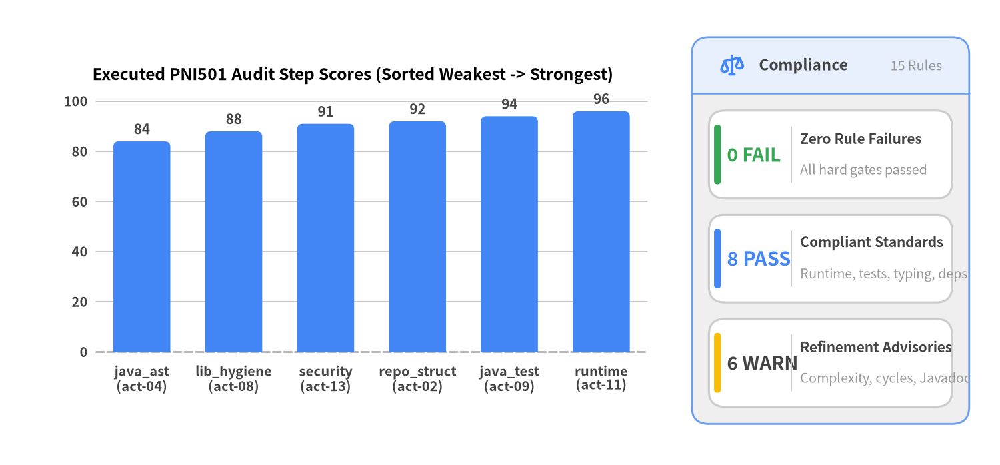
Source Code
from drawlib.canvas import save, setup
from drawlib.charts.bar import BarChart
from drawlib.icons import phosphor
from drawlib.smartarts import KpiCards, Panel
from drawlib.styles import Colors, Styles
setup(width=146, height=68, dpi=150)
chart = BarChart(
axis_line_style=Styles.MutedDashed,
categories=[
"java_ast\n(act-04)",
"lib_hygiene\n(act-08)",
"security\n(act-13)",
"repo_struct\n(act-02)",
"java_test\n(act-09)",
"runtime\n(act-11)",
],
width=92.0,
height=48.0,
title="Executed PNI501 Audit Step Scores (Sorted Weakest -> Strongest)",
title_style=Styles.BlackBold.patch(text_size=11.8),
orientation="vertical",
bar_mode="group",
bar_width_ratio=0.62,
bar_r=0.8,
axis_text_style=Styles.DarkBold.patch(text_size=9.6),
grid_style=Styles.MutedThin,
value_text_style=Styles.DarkBold.patch(text_size=10.0),
value_format="{:.0f}",
)
chart.add_series("Step Score (0–100)", [84, 88, 91, 92, 94, 96], style=Styles.PrimaryFlat)
chart.configure_y_axis(min_value=0.0, max_value=105.0, tick_step=20.0, label="Score")
chart.draw(xy=(5.5, 11.5))
panel = Panel(
"Compliance",
"15 Rules",
style=Styles.Neutral,
header_style=Styles.PrimaryNeutral.patch(shape_line_width=1.2),
text_style=Styles.DarkBold.patch(text_size=11.0),
description_style=Styles.Muted.patch(text_size=9.5),
icon=phosphor.scales,
icon_style=Styles.PrimaryBold,
header_variant="filled",
header_height=8.2,
)
panel.draw((101.0, 6.0), width=40.5, height=56.5, align="bottom_left")
r_xy, r_w, r_h = panel.get_content_box(
(101.0, 6.0), width=40.5, height=56.5, padding=(2.5, 2.5), align="bottom_left"
)
kpis = KpiCards(
style=Styles.Neutral.patch(shape_fill_color=Colors.White),
metric_style=Styles.PrimaryBold.patch(text_size=14.0),
text_style=Styles.DarkBold.patch(text_size=10.0),
description_style=Styles.Muted.patch(text_size=9.5),
accent_style=Styles.PrimaryFlat,
accent_position="left_pill",
metric_layout="left_column",
metric_width_ratio=0.34,
spacing=2.4,
)
kpis.add(
"0 FAIL",
"Zero Rule Failures",
"All hard gates passed",
accent_style=Styles.SuccessFlat,
metric_style=Styles.SuccessBold.patch(text_size=13.5),
)
kpis.add(
"8 PASS",
"Compliant Standards",
"Runtime, tests, typing, deps",
)
kpis.add(
"6 WARN",
"Refinement Advisories",
"Complexity, cycles, Javadoc",
accent_style=Styles.WarningFlat,
metric_style=Styles.WarningBold.patch(text_size=13.5),
)
kpis.draw(xy=r_xy, width=r_w, height=r_h, columns=1, align="bottom_left")
save()
4.1 Executed Audit Step Score Breakdown
| Audit Step ID | Action | Score | Grade | Rule Verdicts | Synthesis & Primary Observations |
|---|---|---|---|---|---|
java_ast_audit |
act-04 |
84 / 100 | A | 3 PASS, 3 WARN, 0 FAIL |
100.0% import hygiene (0 wildcard imports across 393 files / 23,364 LOC) and 99.9% generic type coverage; 59 complex methods (DefaultParameterHandler.setParameters=129), 17 methods with >6 params, 22 class cycles, and 16.3% Javadoc coverage. |
library_hygiene_audit |
act-08 |
88 / 100 | A | 1 PASS, 2 WARN, 0 FAIL |
Declares Automatic-Module-Name: org.mybatis and OSGi exports (pom.xml:86-91), ships 20/20 package-info.java, shades OGNL & Javassist, makes all 9 dependencies <optional>true</optional>, and has 0 System.exit() calls. |
security_vulnerability_audit |
act-13 |
91 / 100 | S | 0 PASS, 2 WARN, 0 FAIL |
Trivy 0.69.3 verified 0 CVEs across pom.xml and dependencies-lock.json, 0 misconfigurations, and 0 secrets; XPathParser disables entity expansion; AbstractSerialStateHolder.java:110 (CWE-502) calls warn-only SerialFilterChecker.check(). |
repo_structure_audit |
act-02 |
92 / 100 | S | 4 PASS, 1 WARN, 0 FAIL |
Exact version pinning in pom.xml, committed mvnw and dependencies-lock.json, deterministic project.build.outputTimestamp, and clean Apache-2.0 licensing (LICENSE + LICENSE-MYBATIS). |
java_test_audit |
act-09 |
94 / 100 | S | 1 PASS, 0 WARN, 0 FAIL |
372 JUnit 5 test files (1,918 methods, 81.5% module mirror coverage) plus src/test/java/org/apache/ibatis/submitted/ regression suite; hermetic HSQLDB/Derby/H2 databases via BaseDataTest. |
container_runtime_audit |
act-11 |
96 / 100 | S | 2 PASS, 0 WARN, 0 FAIL |
All 4 stages passed in maven:3.9-eclipse-temurin-21 under --network=none: 1,990 passed, 0 failed, 0 errors (19 skipped) in 108.88s with 87.4% line (9,985/11,418) and 82.7% branch coverage via JaCoCo 0.8.15. |
4.2 Full Rule Compliance Matrix (FAIL -> WARN -> PASS)
| Status | Rule ID | Source Step | Deterministic Evidence & Compliance Rationale |
|---|---|---|---|
[WARN] |
common/architecture |
java_ast_audit |
22 class-level circular dependencies: 4 cross-package cycles through Configuration -> MapperRegistry -> MapperAnnotationBuilder -> @Arg/@Case -> UnknownTypeHandler -> Configuration, plus 18 intra-package cycles (PooledDataSource <-> PoolState <-> PooledConnection, MetaObject <-> SystemMetaObject, Reflector <-> Invoker, VFS <-> DefaultVFS/JBoss6VFS). |
[WARN] |
common/documentation |
library_hygiene_audit |
README.md (5 sections), src/site/ multilingual XDoc/Markdown documentation, and 20/20 package-info.java files; inline docstring_coverage_pct=16.3% and doc_signature_mismatches=24 (AbstractSQL.java:62-175, ResolverUtil.java:197,221, MapperBuilderAssistant.java:277). |
[WARN] |
common/maintainability |
java_ast_audit |
59 complex functions led by DefaultParameterHandler.java:89 (cognitive=129, 93 lines), PooledDataSource.java:435 (cognitive=78, 117 lines), CacheBuilder.java:142 (cognitive=69), and MapperAnnotationBuilder.java:444 (cognitive=68); 17 methods with >6 parameters in MapperBuilderAssistant.java:203,277,287 (up to 22 params). |
[WARN] |
common/security_vulnerability |
act-13 |
Trivy 0.69.3 filesystem scan passed with 0 application CVEs, 0 OS CVEs, 0 misconfigurations, and 0 secrets. XPathParser.java:233-240 sets FEATURE_SECURE_PROCESSING=true and expandEntityReferences=false. One CWE-502 ObjectInputStream sink at AbstractSerialStateHolder.java:110 calls SerialFilterChecker.check() (line 107), which warns when JEP-290 jdk.serialFilter is unset. |
[WARN] |
common/supply_chain |
repo_structure_audit |
Committed dependencies-lock.json and mvnw; 0 unpinned dependencies; LICENSE and LICENSE-MYBATIS present; .pni/dockerfiles/root/Dockerfile pins maven:3.9-eclipse-temurin-21 and runs as non-root USER pni; SECURITY.md=False and dependency_automation=False in snapshot repository. |
[WARN] |
java/code_quality |
java_ast_audit |
import_hygiene_coverage_pct=100.0% (0 wildcard imports); docstring_coverage_pct=16.3% (1,050 missing, 233 stub Javadocs, 24 @param mismatches); 9 mutable static fields in JBoss6VFS.java:39-85, Resources.java:43, SerialFilterChecker.java:28, and LogFactory.java:33. |
[PASS] |
common/git_workflow |
repo_structure_audit |
.gitignore (244 lines covering Python, Java/Maven target/, Derby logs, .drawlib/, and .pni/cache/); clean trunk history with 0 conflict markers. |
[PASS] |
common/library_guidelines |
library_hygiene_audit |
pom.xml:86-91 (Automatic-Module-Name: org.mybatis, osgi.export), pom.xml:115-134,287-310 (<optional>true</optional>), pom.xml:365-411 (maven-shade-plugin relocation), 0 System.exit calls, typed PersistenceException hierarchy, and LogFactory.java pluggable SPI. |
[PASS] |
common/production_readiness |
container_runtime_audit |
Thread-safe Configuration/DefaultReflectorFactory/OgnlCache registries, bounded PooledDataSource connection checkout/ping lifecycle, configurable Statement.setQueryTimeout propagation in BaseStatementHandler, and structured SLF4J/Log4j2 logging adapters. |
[PASS] |
common/runtime_verification |
container_runtime_audit |
RuntimeFacts.status='passed'; harness_build.status='passed'; test_execution.status='passed' (2,009 total, 1,990 passed, 0 failed, 0 errors, 19 skipped in 108.88s with --network=none); line_coverage_pct=87.4%, branch_coverage_pct=82.7% (9,985/11,418 statements via JaCoCo 0.8.15); smoke_check.status='passed'. |
[PASS] |
common/security |
repo_structure_audit |
committed_secret_files=[] across 393 source and 372 test files; hardcoded_secrets=0; StdOutImpl.java:41-62 is an explicit opt-in stdout logger adapter; DefaultVFS.java:67-341 and Resources.java:273 open local classpath JAR/file URLs rather than external network sockets. |
[PASS] |
java/dependencies |
repo_structure_audit |
pom.xml:67-325,365-411, mvnw, dependencies-lock.json (0 unpinned dependencies; strict <optional>true</optional> and <scope>test</scope> separation; shaded ognl/javassist relocation to org.apache.ibatis.*). |
[PASS] |
java/testing |
java_test_audit |
372 test files vs 393 source files; 1,918 JUnit Jupiter @Test/@ParameterizedTest methods; 81.5% package mirror coverage across all 20 packages plus src/test/java/org/apache/ibatis/submitted/ regression suite; BaseDataTest.java hermetic HSQLDB/Derby/H2 seeding. |
[PASS] |
java/typing |
java_ast_audit |
type_safety_coverage_pct=99.9% across 393 files (2,721 functions); LruCache.java:54 uses Map.Entry<Object, Object>; OgnlClassResolver.java:32 overrides OGNL ClassResolver raw signature; 248 Object/@SuppressWarnings usages confined to reflective boundaries. |
[N/A] |
java/frameworks/spring_boot |
java_ast_audit |
ProjectFacts.runtime_types=['library'], frameworks=['junit5']; standalone org.mybatis:mybatis SQL mapper library with zero Spring dependencies (Spring integration lives in separate mybatis-spring repository). |
4.3 Consolidated Location Findings Index (CRITICAL -> INFO)
Deduplicating the 13 raw observations by file:line produces 12 unique finding locations (0 CRITICAL, 0 HIGH, 3 MEDIUM, 8 LOW, 1 INFO):
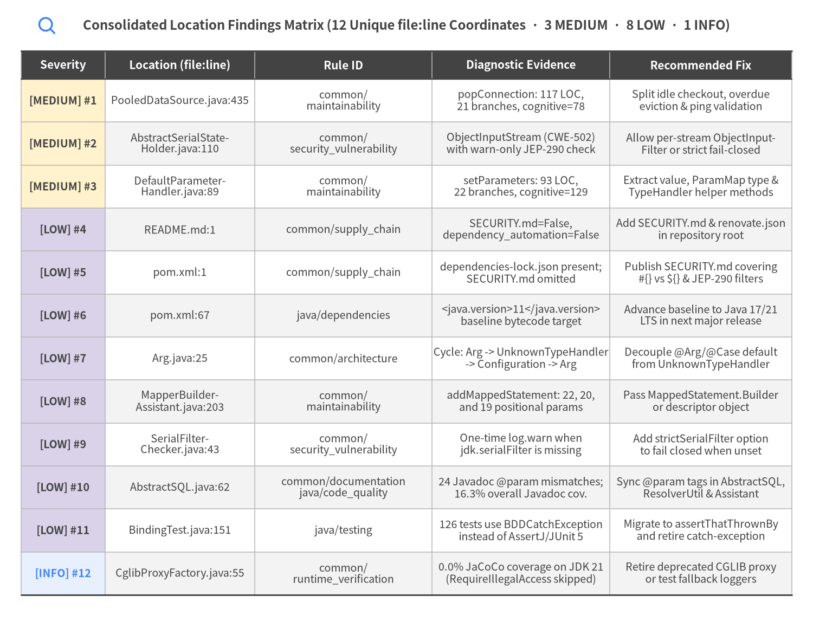
Source Code
from drawlib.canvas import save, setup
from drawlib.icons import phosphor
from drawlib.smartarts import Table
from drawlib.styles import Colors, Styles
from drawlib.text import text
setup(width=174, height=136, dpi=150)
phosphor.magnifying_glass((10.0, 130.5), width=4.2, style=Styles.PrimaryBold)
text(
(87.0, 130.5),
"Consolidated Location Findings Matrix (12 Unique file:line Coordinates · 3 MEDIUM · 8 LOW · 1 INFO)",
style=Styles.DarkBold.patch(text_size=11.5),
)
table = Table(
cell_style=Styles.White,
text_style=Styles.Dark.patch(text_size=9.5),
header_cell_style=Styles.PrimaryFlat,
header_text_style=Styles.WhiteBold.patch(text_size=10.0),
border_style=Styles.MutedThin,
has_header=True,
)
table.set_style_cell_evenodd(
even_color=Colors.Gray1,
even_text_style=Styles.Dark.patch(text_size=9.5),
odd_color=Colors.White,
odd_text_style=Styles.Dark.patch(text_size=9.5),
)
table.set_style_cell_header(
background_color=Colors.Dark,
text_style=Styles.WhiteBold.patch(text_size=10.0),
)
table.set_style_cell(
background_color=Styles.WarningNeutral.shape_fill_color,
text_style=Styles.DarkBold.patch(text_size=9.5),
rows=[1, 2, 3],
columns=[0],
)
table.set_style_cell(
background_color=Styles.SecondaryNeutral.shape_fill_color,
text_style=Styles.DarkBold.patch(text_size=9.5),
rows=[4, 5, 6, 7, 8, 9, 10, 11],
columns=[0],
)
table.set_style_cell(
background_color=Styles.PrimaryNeutral.shape_fill_color,
text_style=Styles.PrimaryBold.patch(text_size=9.5),
rows=[12],
columns=[0],
)
table.set_style_border(
top=Styles.Dark.patch(line_width=1.4),
top2=Styles.Dark.patch(line_width=1.1),
bottom=Styles.Dark.patch(line_width=1.4),
left=Styles.MutedThin,
right=Styles.MutedThin,
between_columns=Styles.MutedThin,
between_rows=Styles.MutedThin,
)
findings_rows = [
["Severity", "Location (file:line)", "Rule ID", "Diagnostic Evidence", "Recommended Fix"],
[
"[MEDIUM] #1",
"PooledDataSource.java:435",
"common/\nmaintainability",
"popConnection: 117 LOC,\n21 branches, cognitive=78",
"Split idle checkout, overdue\neviction & ping validation",
],
[
"[MEDIUM] #2",
"AbstractSerialState-\nHolder.java:110",
"common/\nsecurity_vulnerability",
"ObjectInputStream (CWE-502)\nwith warn-only JEP-290 check",
"Allow per-stream ObjectInput-\nFilter or strict fail-closed",
],
[
"[MEDIUM] #3",
"DefaultParameter-\nHandler.java:89",
"common/\nmaintainability",
"setParameters: 93 LOC,\n22 branches, cognitive=129",
"Extract value, ParamMap type &\nTypeHandler helper methods",
],
[
"[LOW] #4",
"README.md:1",
"common/supply_chain",
"SECURITY.md=False,\ndependency_automation=False",
"Add SECURITY.md & renovate.json\nin repository root",
],
[
"[LOW] #5",
"pom.xml:1",
"common/supply_chain",
"dependencies-lock.json present;\nSECURITY.md omitted",
"Publish SECURITY.md covering\n#{} vs ${} & JEP-290 filters",
],
[
"[LOW] #6",
"pom.xml:67",
"java/dependencies",
"<java.version>11</java.version>\nbaseline bytecode target",
"Advance baseline to Java 17/21\nLTS in next major release",
],
[
"[LOW] #7",
"Arg.java:25",
"common/architecture",
"Cycle: Arg -> UnknownTypeHandler\n-> Configuration -> Arg",
"Decouple @Arg/@Case default\nfrom UnknownTypeHandler",
],
[
"[LOW] #8",
"MapperBuilder-\nAssistant.java:203",
"common/\nmaintainability",
"addMappedStatement: 22, 20,\nand 19 positional params",
"Pass MappedStatement.Builder\nor descriptor object",
],
[
"[LOW] #9",
"SerialFilter-\nChecker.java:43",
"common/\nsecurity_vulnerability",
"One-time log.warn when\njdk.serialFilter is missing",
"Add strictSerialFilter option\nto fail closed when unset",
],
[
"[LOW] #10",
"AbstractSQL.java:62",
"common/documentation\njava/code_quality",
"24 Javadoc @param mismatches;\n16.3% overall Javadoc cov.",
"Sync @param tags in AbstractSQL,\nResolverUtil & Assistant",
],
[
"[LOW] #11",
"BindingTest.java:151",
"java/testing",
"126 tests use BDDCatchException\ninstead of AssertJ/JUnit 5",
"Migrate to assertThatThrownBy\nand retire catch-exception",
],
[
"[INFO] #12",
"CglibProxyFactory.java:55",
"common/\nruntime_verification",
"0.0% JaCoCo coverage on JDK 21\n(RequireIllegalAccess skipped)",
"Retire deprecated CGLIB proxy\nor test fallback loggers",
],
]
table.draw_flexible(
xy=(4.5, 125.0),
column_widths=[18.0, 32.0, 38.0, 38.0, 39.0],
row_heights=[6.0] + [9.2] * 12,
data=findings_rows,
align="top_left",
)
save()
Complete Consolidated Findings Reference (1..12)
[MEDIUM]src/main/java/org/apache/ibatis/datasource/pooled/PooledDataSource.java:435(common/maintainability):- Evidence:
length=117 lines, branches=21, cognitive=78 - Recommendation: Decompose
popConnectioninto smaller private methods handling idle connection retrieval, overdue active connection reclamation, and connection validation.
- Evidence:
[MEDIUM]src/main/java/org/apache/ibatis/executor/loader/AbstractSerialStateHolder.java:110(common/security_vulnerability):- Evidence:
SerialFilterChecker.check(); try (ObjectInputStream in = new ObjectInputStream(new ByteArrayInputStream(this.userBeanBytes))) { this.userBean = in.readObject(); ... } - Recommendation: Allow configuring a dedicated
ObjectInputFilteronConfiguration(or enforce a default package allowlist on theObjectInputStreaminstance viain.setObjectInputFilter(...)) whenjdk.serialFilteris not set at the JVM level.
- Evidence:
[MEDIUM]src/main/java/org/apache/ibatis/scripting/defaults/DefaultParameterHandler.java:89(common/maintainability):- Evidence:
length=93 lines, branches=22, cognitive=129 - Recommendation: Extract helper methods for parameter value resolution (
resolveParameterValue),ParamMapgeneric type inference (resolveParamMapGenericType), andTypeHandlerselection (resolveTypeHandler).
- Evidence:
[LOW]README.md:1(common/supply_chain):- Evidence:
ProjectFacts.has_security_policy=False, has_dependency_automation=False - Recommendation: Add a root
SECURITY.mddocumenting vulnerability reporting channels and includerenovate.jsonfor automated dependency tracking.
- Evidence:
[LOW]pom.xml:1(common/supply_chain):- Evidence:
ProjectFacts: LICENSE=True, dependencies-lock.json present, SECURITY.md=False, dependency_automation=False - Recommendation: Add a
SECURITY.mddocumenting the vulnerability disclosure process and JEP-290/SQL-injection security guidance (e.g.,#{}PreparedStatementbinding vs${}string substitution), and configure Dependabot for Maven dependencies.
- Evidence:
[LOW]pom.xml:67(java/dependencies):- Evidence:
<java.version>11</java.version> / <java.release.version>11</java.release.version> - Recommendation: Consider advancing the baseline bytecode target to Java 17 or Java 21 LTS in future major releases to leverage modern JVM intrinsics, records, and sealed types natively.
- Evidence:
[LOW]src/main/java/org/apache/ibatis/annotations/Arg.java:25(common/architecture):- Evidence:
Circular dependency: Arg -> UnknownTypeHandler -> Configuration -> MapperRegistry -> MapperAnnotationBuilder -> Arg - Recommendation: Decouple annotation defaults by referencing the
TypeHandler.classinterface as the default sentinel or breakingUnknownTypeHandler's direct dependency onConfiguration.
- Evidence:
[LOW]src/main/java/org/apache/ibatis/builder/MapperBuilderAssistant.java:203(common/maintainability):- Evidence:
params=22 (> 6, SIG Unit Interfacing); overloaded at lines 277 (20 params) and 287 (19 params) - Recommendation: Prefer passing
MappedStatement.Builderor a dedicatedStatementDescriptorparameter object.
- Evidence:
[LOW]src/main/java/org/apache/ibatis/io/SerialFilterChecker.java:43(common/security_vulnerability):- Evidence:
if (firstInvocation && SERIAL_FILTER_MISSING) { firstInvocation = false; log.warn("As you are using functionality that deserializes object streams, it is recommended to define the JEP-290 serial filter..."); } - Recommendation: Provide a strict mode configuration flag (e.g.,
strictSerialFilter=true) that throws aPersistenceExceptionorSerializedCacheExceptionif deserialization is attempted without an active JEP-290ObjectInputFilter.
- Evidence:
[LOW]src/main/java/org/apache/ibatis/jdbc/AbstractSQL.java:62(common/documentation,java/code_quality):- Evidence:
24 Javadoc @param mismatches across AbstractSQL.java (lines 62, 89, 104, 126, 148, 175), ResolverUtil.java (197, 221), and MapperBuilderAssistant.java (277); 16.3% overall Javadoc coverage - Recommendation: Align
@paramtags inAbstractSQL,ResolverUtil, andMapperBuilderAssistantwith actual parameter names and expand Javadoc on public SPIs.
- Evidence:
[LOW]src/test/java/org/apache/ibatis/binding/BindingTest.java:151(java/testing):- Evidence:
126 test methods use BDDCatchException.when(() -> ...); then(caughtException()).isInstanceOf(...) instead of JUnit 5 Assertions.assertThrows or AssertJ assertThatThrownBy - Recommendation: Migrate remaining
BDDCatchException.when/then(caughtException())usages to AssertJAssertions.assertThatThrownBy(...)or JUnit 5Assertions.assertThrows(...)so thecatch-exceptiondependency can be retired.
- Evidence:
[INFO]src/main/java/org/apache/ibatis/executor/loader/cglib/CglibProxyFactory.java:55(common/runtime_verification):- Evidence:
JaCoCo line_coverage_pct=0.0% (0/76 statements covered, lines 55-80); Log4j2LoggerImpl.java line_coverage_pct=0.0% (0/16); Slf4jLoggerImpl.java line_coverage_pct=0.0% (0/15) - Recommendation: Add targeted unit tests with mocked non-
LocationAwareSLF4J/Log4j2Loggerinstances to coverSlf4jLoggerImplandLog4j2LoggerImpl, and plan removal of deprecated CGLIB proxy classes in the next major release.
- Evidence:
4.4 Configured Scope & Accepted Design Waivers (pni.toml)
| Waiver ID | Scope Pattern | Matched Count | Documented Engineering Rationale |
|---|---|---|---|
DS-0026 |
.pni/dockerfiles/** |
0 |
Hermetic batch test container exits upon Maven JUnit completion; daemon HEALTHCHECK is not applicable. |
5. Deep Dive: Code Quality, Testing & Runtime
MyBatis 3 v3.6.0 combines disciplined static code hygiene across 393 Java source files (23,364 LOC, 374 classes, 2,721 methods) with high-confidence runtime verification. Static AST analysis confirms 100.0% import hygiene (0 wildcard or unsorted imports) and 99.9% generic type coverage, while hermetic --network=none container execution (maven:3.9-eclipse-temurin-21) verifies 1,990 passing JUnit 5 tests (0 failures, 0 errors, 19 skipped out of 2,009 total) with 87.4% measured JaCoCo line coverage (9,985 / 11,418 statements) and 82.7% branch coverage.
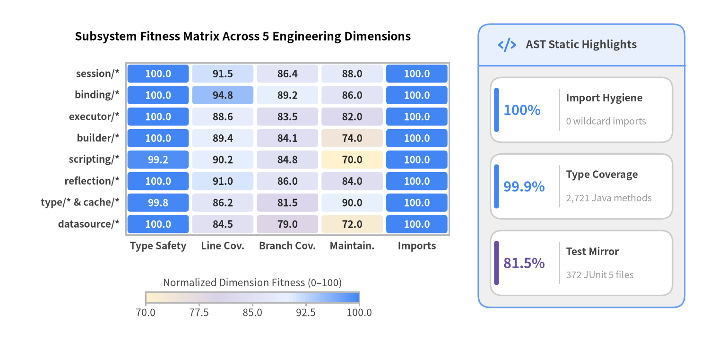
Source Code
from drawlib.canvas import save, setup
from drawlib.charts.heatmap import HeatmapChart
from drawlib.icons import phosphor
from drawlib.smartarts import KpiCards, Panel
from drawlib.styles import Colors, Styles
setup(width=146, height=70, dpi=150)
heatmap = HeatmapChart(
styles=[
Styles.WarningNeutral,
Styles.SecondaryNeutral,
Styles.PrimaryNeutral,
Styles.PrimaryFlat,
],
x_categories=[
"Type Safety",
"Line Cov.",
"Branch Cov.",
"Maintain.",
"Imports",
],
axis_line_style=Styles.Muted,
axis_text_style=Styles.DarkBold.patch(text_size=10.0),
value_text_style=Styles.DarkBold.patch(text_size=10.0),
width=91.0,
height=49.0,
cell_gap=0.7,
cell_r=0.6,
title="Subsystem Fitness Matrix Across 5 Engineering Dimensions",
title_style=Styles.BlackBold.patch(text_size=11.8),
value_format="{:.1f}",
)
heatmap.add_row("session/*", [100.0, 91.5, 86.4, 88.0, 100.0])
heatmap.add_row("binding/*", [100.0, 94.8, 89.2, 86.0, 100.0])
heatmap.add_row("executor/*", [100.0, 88.6, 83.5, 82.0, 100.0])
heatmap.add_row("builder/*", [100.0, 89.4, 84.1, 74.0, 100.0])
heatmap.add_row("scripting/*", [99.2, 90.2, 84.8, 70.0, 100.0])
heatmap.add_row("reflection/*", [100.0, 91.0, 86.0, 84.0, 100.0])
heatmap.add_row("type/* & cache/*", [99.8, 86.2, 81.5, 90.0, 100.0])
heatmap.add_row("datasource/*", [100.0, 84.5, 79.0, 72.0, 100.0])
heatmap.draw(xy=(4.5, 16.0))
heatmap.draw_colorbar(
xy=(30.0, 7.5),
text_style=Styles.Dark.patch(text_size=10.0),
length=44.0,
thickness=2.2,
label="Normalized Dimension Fitness (0–100)",
)
panel = Panel(
"AST Static Highlights",
style=Styles.Neutral,
header_style=Styles.PrimaryNeutral,
text_style=Styles.DarkBold.patch(text_size=11.0),
icon=phosphor.code,
icon_style=Styles.PrimaryBold,
header_variant="filled",
header_height=8.5,
)
panel.draw((98.5, 6.5), width=42.5, height=58.5)
inner_xy, inner_w, inner_h = panel.get_content_box(
(98.5, 6.5), width=42.5, height=58.5, padding=(2.5, 2.5)
)
kpis = KpiCards(
style=Styles.Neutral.patch(shape_fill_color=Colors.White),
metric_style=Styles.PrimaryBold.patch(text_size=14.0),
text_style=Styles.DarkBold.patch(text_size=10.2),
description_style=Styles.Muted.patch(text_size=9.5),
accent_style=Styles.PrimaryFlat,
accent_position="left_pill",
metric_layout="left_column",
metric_width_ratio=0.38,
spacing=2.4,
)
kpis.add("100%", "Import Hygiene", "0 wildcard imports")
kpis.add("99.9%", "Type Coverage", "2,721 Java methods")
kpis.add(
"81.5%",
"Test Mirror",
"372 JUnit 5 files",
accent_style=Styles.SecondaryFlat,
metric_style=Styles.SecondaryBold.patch(text_size=14.0),
)
kpis.draw(xy=inner_xy, width=inner_w, height=inner_h, columns=1)
save()
5.1 Static Java AST, SIG Maintainability & Operational Readiness
| Metric Category | Metric Name | Measured Value | Engineering Interpretation & Key Code Coordinates |
|---|---|---|---|
| Codebase Volume | Source Files / LOC / Classes / Methods | 393 / 23,364 / 374 / 2,721 |
Compact, cohesive core distributed across 20 packages under org.apache.ibatis.* |
| Import Hygiene | import_hygiene_coverage_pct |
100.0% |
0 wildcard imports (import foo.*) and 0 unsorted import groups (enforced via impsort-maven-plugin) |
| Generic Typing | type_safety_coverage_pct |
99.9% |
Only 2 raw generic types (LruCache.java:53, OgnlClassResolver.java:32); 248 Object / @SuppressWarnings("unchecked") usages at reflection boundaries |
| Javadoc Coverage | docstring_coverage_pct |
16.3% |
1,050 missing public Javadocs, 233 stubs, and 24 @param name mismatches (AbstractSQL.java, ResolverUtil.java, MapperBuilderAssistant.java) |
| SIG Complexity | complex_functions_count |
59 |
Led by DefaultParameterHandler.setParameters (cognitive=129), PooledDataSource.popConnection (78), CacheBuilder.setCacheProperties (69), MapperAnnotationBuilder.getReturnType (68) |
| SIG Interfacing | excessive_parameters_count (>6) |
17 |
MapperBuilderAssistant.addMappedStatement (22, 20, 19 params) and buildResultMapping (14, 11 params) |
| Coupling & Cycles | circular_dependencies_count |
22 |
4 cross-package cycles (@Arg/@Case -> UnknownTypeHandler -> Configuration -> MapperRegistry -> MapperAnnotationBuilder) + 18 intra-package cycles |
| Static State & Idioms | global_state_usages / bug_risk_idioms |
9 / 5 |
JBoss6VFS.java:39-85 reflective cache fields, Resources.charset, SerialFilterChecker.firstInvocation, LogFactory.logConstructor; StdOutImpl.java opt-in console logger |
| 12-Factor / SRE PRR | missing_io_timeouts / env_access |
5 / 1 |
DefaultVFS.java:67-341 and Resources.java:273 open local classpath JAR/file URL streams; SerialFilterChecker.java:37 reads jdk.serialFilter |
5.2 Hermetic Container Runtime Verification & JaCoCo Coverage Analysis
All 4 runtime verification gates (RV-01 through RV-04) executed inside a hermetic maven:3.9-eclipse-temurin-21 container (.pni/dockerfiles/root/Dockerfile) under --network=none, --memory=2g, --cpus=2, and non-root UID execution:
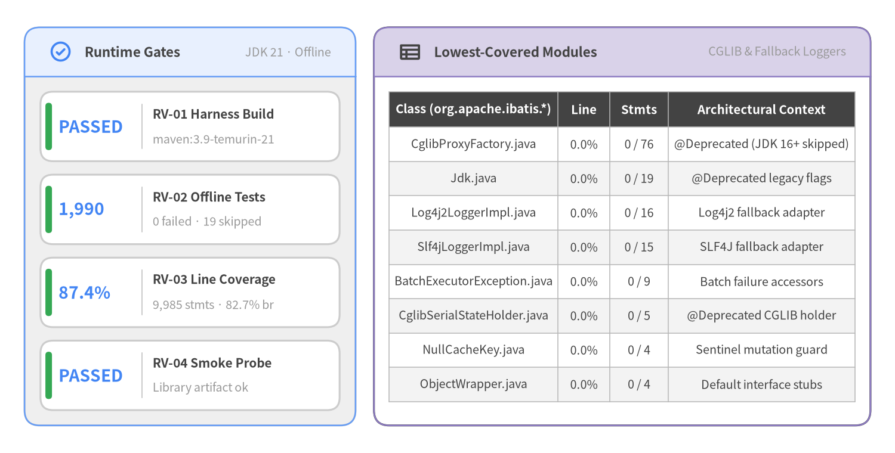
Source Code
from drawlib.canvas import save, setup
from drawlib.icons import phosphor
from drawlib.smartarts import KpiCards, Panel, Table
from drawlib.styles import Colors, Styles
setup(width=146, height=74, dpi=150)
left_panel = Panel(
"Runtime Gates",
"JDK 21 · Offline",
style=Styles.Neutral,
header_style=Styles.PrimaryNeutral.patch(shape_line_width=1.2),
text_style=Styles.DarkBold.patch(text_size=10.8),
description_style=Styles.Muted.patch(text_size=9.5),
icon=phosphor.check_circle,
icon_style=Styles.PrimaryBold,
header_variant="filled",
header_height=8.0,
)
left_panel.draw((4.0, 4.5), width=54.0, height=65.0, align="bottom_left")
l_xy, l_w, l_h = left_panel.get_content_box(
(4.0, 4.5), width=54.0, height=65.0, padding=(2.6, 2.5), align="bottom_left"
)
kpis = KpiCards(
style=Styles.Neutral.patch(shape_fill_color=Colors.White),
metric_style=Styles.PrimaryBold.patch(text_size=13.5),
text_style=Styles.DarkBold.patch(text_size=10.0),
description_style=Styles.Muted.patch(text_size=9.5),
accent_style=Styles.SuccessFlat,
accent_position="left_pill",
metric_layout="left_column",
metric_width_ratio=0.34,
spacing=2.2,
)
kpis.add("PASSED", "RV-01 Harness Build", "maven:3.9-temurin-21")
kpis.add("1,990", "RV-02 Offline Tests", "0 failed · 19 skipped")
kpis.add("87.4%", "RV-03 Line Coverage", "9,985 stmts · 82.7% br")
kpis.add("PASSED", "RV-04 Smoke Probe", "Library artifact ok")
kpis.draw(xy=l_xy, width=l_w, height=l_h, columns=1, align="bottom_left")
right_panel = Panel(
"Lowest-Covered Modules",
"CGLIB & Fallback Loggers",
style=Styles.White,
header_style=Styles.SecondaryNeutral.patch(shape_line_width=1.2),
text_style=Styles.DarkBold.patch(text_size=10.8),
description_style=Styles.Muted.patch(text_size=9.5),
icon=phosphor.table,
icon_style=Styles.DarkBold,
header_variant="filled",
header_height=8.0,
)
right_panel.draw((61.0, 4.5), width=81.0, height=65.0, align="bottom_left")
tbl = Table(
cell_style=Styles.White,
text_style=Styles.Dark.patch(text_size=9.5),
header_cell_style=Styles.PrimaryFlat,
header_text_style=Styles.WhiteBold.patch(text_size=9.8),
border_style=Styles.MutedThin,
)
tbl.set_style_cell_evenodd(
even_color=Colors.Gray1,
even_text_style=Styles.Dark.patch(text_size=9.5),
odd_color=Colors.White,
odd_text_style=Styles.Dark.patch(text_size=9.5),
)
tbl.set_style_cell_header(
background_color=Colors.Dark,
text_style=Styles.WhiteBold.patch(text_size=9.8),
)
cov_rows = [
["Class (org.apache.ibatis.*)", "Line", "Stmts", "Architectural Context"],
["CglibProxyFactory.java", "0.0%", "0 / 76", "@Deprecated (JDK 16+ skipped)"],
["Jdk.java", "0.0%", "0 / 19", "@Deprecated legacy flags"],
["Log4j2LoggerImpl.java", "0.0%", "0 / 16", "Log4j2 fallback adapter"],
["Slf4jLoggerImpl.java", "0.0%", "0 / 15", "SLF4J fallback adapter"],
["BatchExecutorException.java", "0.0%", "0 / 9", "Batch failure accessors"],
["CglibSerialStateHolder.java", "0.0%", "0 / 5", "@Deprecated CGLIB holder"],
["NullCacheKey.java", "0.0%", "0 / 4", "Sentinel mutation guard"],
["ObjectWrapper.java", "0.0%", "0 / 4", "Default interface stubs"],
]
tbl.draw_flexible(
xy=(63.5, 59.0),
column_widths=[27.5, 8.5, 9.5, 30.5],
row_heights=[5.8] + [5.6] * 8,
data=cov_rows,
align="top_left",
)
save()
Lowest-Covered Modules (Measured Line & Branch Coverage, Ascending)
| Module Path | Line Coverage | Branch Coverage | Statements Covered | Missing Lines & Root Cause |
|---|---|---|---|---|
src/main/java/org/apache/ibatis/executor/loader/cglib/CglibProxyFactory.java |
0.0% |
0.0% |
0 / 76 |
Lines 55..80 — @Deprecated; RequireIllegalAccess tests excluded on JDK 16+ (pom.xml:83) |
src/main/java/org/apache/ibatis/reflection/Jdk.java |
0.0% |
— |
0 / 19 |
Lines 34..55 — @Deprecated compatibility constants from Java 7/8 transition |
src/main/java/org/apache/ibatis/logging/log4j2/Log4j2LoggerImpl.java |
0.0% |
— |
0 / 16 |
Lines 29..55 — Fallback adapter when Log4j2 Logger is not an AbstractLogger |
src/main/java/org/apache/ibatis/logging/slf4j/Slf4jLoggerImpl.java |
0.0% |
— |
0 / 15 |
Lines 28..54 — Fallback adapter when SLF4J Logger does not implement LocationAwareLogger |
src/main/java/org/apache/ibatis/executor/BatchExecutorException.java |
0.0% |
— |
0 / 9 |
Lines 37..78 — Diagnostic accessor methods on BatchExecutorException |
src/main/java/org/apache/ibatis/executor/loader/cglib/CglibSerialStateHolder.java |
0.0% |
— |
0 / 5 |
Lines 35..46 — @Deprecated companion to CglibProxyFactory |
src/main/java/org/apache/ibatis/cache/NullCacheKey.java |
0.0% |
— |
0 / 4 |
Lines 28..38 — CacheException guards when attempting to mutate CacheKey.NULL_CACHE_KEY |
src/main/java/org/apache/ibatis/reflection/wrapper/ObjectWrapper.java |
0.0% |
— |
0 / 4 |
Lines 46..52 — Interface default methods overridden by all concrete ObjectWrapper implementations |
6. Deep Dive: Security, Supply Chain & API Surface
MyBatis 3 v3.6.0 exhibits a strong security and supply-chain posture (security_vulnerability_audit: 91/100, Grade S; security axis: 91/100; dependencies axis: 93/100). Containerized Trivy 0.69.3 scanning (engine=docker, scanned_filesystem=True) across pom.xml and dependencies-lock.json confirmed zero CRITICAL, HIGH, MEDIUM, or LOW CVEs across all 9 direct and optional dependencies, zero Dockerfile/IaC misconfigurations, and zero leaked secrets.
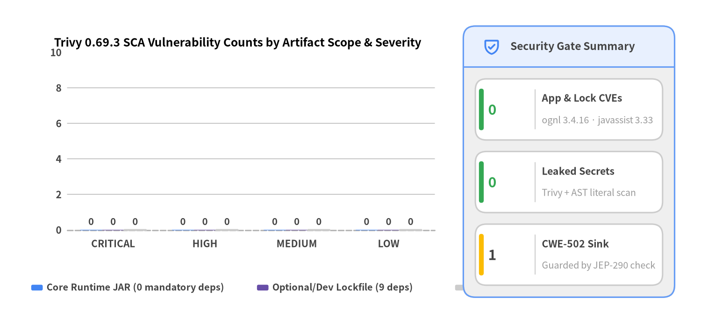
Source Code
from drawlib.canvas import save, setup
from drawlib.charts.bar import BarChart
from drawlib.icons import phosphor
from drawlib.smartarts import KpiCards, Panel
from drawlib.styles import Colors, Styles
setup(width=146, height=68, dpi=150)
chart = BarChart(
axis_line_style=Styles.MutedDashed,
categories=["CRITICAL", "HIGH", "MEDIUM", "LOW"],
width=88.0,
height=46.5,
title="Trivy 0.69.3 SCA Vulnerability Counts by Artifact Scope & Severity",
title_style=Styles.BlackBold.patch(text_size=11.8),
orientation="vertical",
bar_mode="group",
bar_width_ratio=0.72,
bar_r=0.8,
axis_text_style=Styles.DarkBold.patch(text_size=10.0),
grid_style=Styles.MutedThin,
value_text_style=Styles.DarkBold.patch(text_size=9.8),
value_format="{:.0f}",
)
chart.add_series("Core Runtime JAR (0 mandatory deps)", [0, 0, 0, 0], style=Styles.PrimaryFlat)
chart.add_series("Optional/Dev Lockfile (9 deps)", [0, 0, 0, 0], style=Styles.SecondaryFlat)
chart.add_series("Project Dockerfile OS", [0, 0, 0, 0], style=Styles.Neutral)
chart.configure_y_axis(min_value=0.0, max_value=10.0, tick_step=2.0, label="CVE Count")
chart.draw(xy=(5.5, 15.0))
chart.draw_legend(
xy=(6.5, 8.0),
text_style=Styles.DarkBold.patch(text_size=9.6),
orientation="horizontal",
item_gap=3.5,
)
panel = Panel(
"Security Gate Summary",
style=Styles.Neutral,
header_style=Styles.PrimaryNeutral,
text_style=Styles.DarkBold.patch(text_size=11.0),
icon=phosphor.shield_check,
icon_style=Styles.PrimaryBold,
header_variant="filled",
header_height=8.5,
)
panel.draw((96.5, 6.0), width=44.0, height=56.5)
r_xy, r_w, r_h = panel.get_content_box(
(96.5, 6.0), width=44.0, height=56.5, padding=(2.5, 2.5)
)
kpis = KpiCards(
style=Styles.Neutral.patch(shape_fill_color=Colors.White),
metric_style=Styles.SuccessBold.patch(text_size=14.5),
text_style=Styles.DarkBold.patch(text_size=10.2),
description_style=Styles.Muted.patch(text_size=9.5),
accent_style=Styles.SuccessFlat,
accent_position="left_pill",
metric_layout="left_column",
metric_width_ratio=0.32,
spacing=2.4,
)
kpis.add("0", "App & Lock CVEs", "ognl 3.4.16 · javassist 3.33")
kpis.add("0", "Leaked Secrets", "Trivy + AST literal scan")
kpis.add(
"1",
"CWE-502 Sink",
"Guarded by JEP-290 check",
accent_style=Styles.WarningFlat,
metric_style=Styles.WarningBold.patch(text_size=14.5),
)
kpis.draw(xy=r_xy, width=r_w, height=r_h, columns=1)
save()
6.1 Supply-Chain Hygiene, Shaded Packaging & Governance Baseline
MyBatis 3's pom.xml and dependencies-lock.json enforce a zero-dependency runtime model for downstream applications: every logging adapter and bytecode library is marked <optional>true</optional>, while maven-shade-plugin (pom.xml:365-411) relocates ognl:ognl:3.4.16 to org.apache.ibatis.ognl and org.javassist:javassist:3.33.0-GA to org.apache.ibatis.javassist.
| Supply-Chain & Security Gate | Metric / Value | Verdict | Architectural & Compliance Evidence |
|---|---|---|---|
Deterministic Lockfile (has_lockfile) |
True (dependencies-lock.json, mvnw) |
PASS |
Full Maven dependency lockfile and Maven Wrapper committed |
Optional/Provided Dependencies (dependencies_count) |
9 packages (0 mandatory) |
PASS |
All compile/provided dependencies marked <optional>true</optional> in pom.xml |
Unpinned Specifiers (unpinned_dependencies_count) |
0 |
PASS |
Every dependency in pom.xml is pinned to an exact release version |
Dual Licensing Clarity (has_license) |
True |
PASS |
Repository Apache-2.0 LICENSE + upstream LICENSE-MYBATIS and NOTICE |
Trivy Application & OS CVEs (vuln_counts.total) |
0 (0 C / 0 H / 0 M / 0 L) |
PASS |
Clean across pom.xml and dependencies-lock.json (trivy:0.69.3) |
| Committed / Hardcoded Secrets | 0 files / 0 literals |
PASS |
Zero credential artifacts or tokens in source or test suites |
AST Dangerous Sinks (ast_dangerous_sinks_count) |
1 (CWE-502) |
WARN |
AbstractSerialStateHolder.java:110 (ObjectInputStream) guarded by warn-only SerialFilterChecker.check() |
Standalone HTTP Endpoints (api_endpoints_count) |
0 |
N/A |
Pure Java persistence library archetype; exposes zero HTTP routes |
Repo Governance (SECURITY.md / Dependabot) |
False / False |
WARN |
Omitted in this standalone documentation snapshot |
Pinned Dependency Inventory in pom.xml (0 Trivy CVEs)
Maven Coordinate (groupId:artifactId) |
Pinned Version | Scope / Optional | Packaging & Architectural Role | Trivy CVEs |
|---|---|---|---|---|
ognl:ognl |
3.4.16 |
compile (optional=true) |
Shaded into org.apache.ibatis.ognl for Dynamic SQL <if>/<foreach> expression evaluation |
0 |
org.javassist:javassist |
3.33.0-GA |
compile (optional=true) |
Shaded into org.apache.ibatis.javassist for JavassistProxyFactory lazy-loading proxies |
0 |
org.slf4j:slf4j-api |
2.0.20 |
compile (optional=true) |
Primary structured logging bridge (Slf4jImpl / Slf4jLocationAwareLoggerImpl) |
0 |
org.apache.logging.log4j:log4j-api |
2.26.1 |
compile (optional=true) |
Apache Log4j 2 logging adapter (Log4j2Impl) |
0 |
ch.qos.reload4j:reload4j |
1.2.27 |
compile (optional=true) |
Security-hardened Log4j 1.x replacement bridge (Log4jImpl) |
0 |
commons-logging:commons-logging |
1.4.0 |
compile (optional=true) |
Apache Commons Logging bridge (JakartaCommonsLoggingImpl) |
0 |
cglib:cglib |
3.3.0 |
compile (optional=true) |
Deprecated legacy bytecode proxy provider (CglibProxyFactory) |
0 |
com.microsoft.sqlserver:mssql-jdbc |
13.6.1.jre11 |
compile (optional=true) |
Optional SQL Server DateTimeOffsetTypeHandler support |
0 |
org.gaul:modernizer-maven-annotations |
${modernizer.plugin} |
provided (optional=true) |
Compile-time @SuppressModernizer annotations |
0 |
6.2 AST Dangerous Code Sinks (CWE SAST), XML Hardening & SQL Injection Defense
Because MyBatis 3 is a persistence library (api_endpoints_count = 0), its security surface centers on three internal mechanisms: (1) Java deserialization in L2 caches and lazy-loading state holders (CWE-502), (2) XML configuration/mapper DTD parsing (CWE-611 XXE prevention), and (3) SQL parameter binding (#{} PreparedStatement placeholders vs. ${} string interpolation).
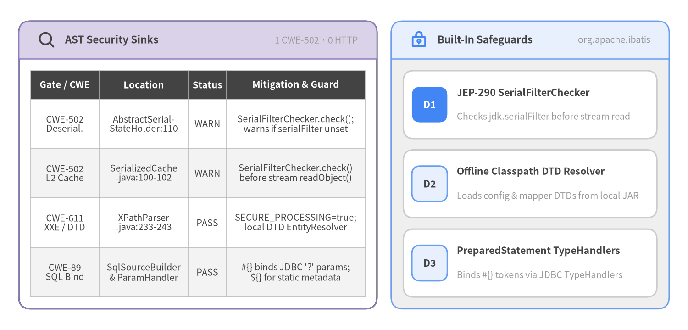
Source Code
from drawlib.canvas import save, setup
from drawlib.icons import phosphor
from drawlib.smartarts import CardList, Panel, Table
from drawlib.styles import Colors, Styles
setup(width=146, height=70, dpi=150)
white_card = Styles.Neutral.patch(shape_fill_color=Colors.White)
left_panel = Panel(
"AST Security Sinks",
"1 CWE-502 · 0 HTTP",
style=Styles.White,
header_style=Styles.SecondaryNeutral.patch(shape_line_width=1.2),
text_style=Styles.DarkBold.patch(text_size=10.8),
description_style=Styles.Muted.patch(text_size=9.5),
icon=phosphor.magnifying_glass,
icon_style=Styles.WarningBold,
header_variant="filled",
header_height=8.0,
)
left_panel.draw((4.0, 4.5), width=76.0, height=61.0, align="bottom_left")
tbl = Table(
cell_style=Styles.White,
text_style=Styles.Dark.patch(text_size=9.5),
header_cell_style=Styles.PrimaryFlat,
header_text_style=Styles.WhiteBold.patch(text_size=9.8),
border_style=Styles.MutedThin,
)
tbl.set_style_cell_evenodd(
even_color=Colors.Gray1,
even_text_style=Styles.Dark.patch(text_size=9.5),
odd_color=Colors.White,
odd_text_style=Styles.Dark.patch(text_size=9.5),
)
tbl.set_style_cell_header(
background_color=Colors.Dark,
text_style=Styles.WhiteBold.patch(text_size=9.8),
)
sink_rows = [
["Gate / CWE", "Location", "Status", "Mitigation & Guard"],
[
"CWE-502\nDeserial.",
"AbstractSerial-\nStateHolder:110",
"WARN",
"SerialFilterChecker.check();\nwarns if serialFilter unset",
],
[
"CWE-502\nL2 Cache",
"SerializedCache\n.java:100-102",
"WARN",
"SerialFilterChecker.check()\nbefore stream readObject()",
],
[
"CWE-611\nXXE / DTD",
"XPathParser\n.java:233-243",
"PASS",
"SECURE_PROCESSING=true;\nlocal DTD EntityResolver",
],
[
"CWE-89\nSQL Bind",
"SqlSourceBuilder\n& ParamHandler",
"PASS",
"#{} binds JDBC '?' params;\n${} for static metadata",
],
]
tbl.draw_flexible(
xy=(6.5, 55.0),
column_widths=[14.5, 19.0, 8.0, 29.5],
row_heights=[6.0] + [10.5] * 4,
data=sink_rows,
align="top_left",
)
right_panel = Panel(
"Built-In Safeguards",
"org.apache.ibatis",
style=Styles.Neutral,
header_style=Styles.PrimaryNeutral.patch(shape_line_width=1.2),
text_style=Styles.DarkBold.patch(text_size=10.8),
description_style=Styles.Muted.patch(text_size=9.5),
icon=phosphor.lock_key,
icon_style=Styles.PrimaryBold,
header_variant="filled",
header_height=8.0,
)
right_panel.draw((83.0, 4.5), width=59.0, height=61.0, align="bottom_left")
r_xy, r_w, r_h = right_panel.get_content_box(
(83.0, 4.5), width=59.0, height=61.0, padding=(2.6, 2.5), align="bottom_left"
)
cards = CardList(
style=white_card,
text_style=Styles.DarkBold.patch(text_size=10.2),
description_style=Styles.Muted.patch(text_size=9.5),
badge_shape="rounded_rect",
badge_style=Styles.PrimaryNeutral,
badge_text_style=Styles.DarkBold.patch(text_size=10.0),
direction="vertical",
spacing=2.4,
)
cards.add(
"JEP-290 SerialFilterChecker",
"Checks jdk.serialFilter before stream read",
badge_text="D1",
badge_style=Styles.PrimaryFlat,
badge_text_style=Styles.WhiteBold.patch(text_size=10.0),
)
cards.add(
"Offline Classpath DTD Resolver",
"Loads config & mapper DTDs from local JAR",
badge_text="D2",
)
cards.add(
"PreparedStatement TypeHandlers",
"Binds #{} tokens via JDBC TypeHandlers",
badge_text="D3",
)
cards.draw(r_xy, width=r_w, height=r_h, align="bottom_left")
save()
Detailed Assessment of CWE-502 (AbstractSerialStateHolder.java:110)
- Flagged AST Sink:
[HIGH]CWE-502(unsafe_deserialization) atsrc/main/java/org/apache/ibatis/executor/loader/AbstractSerialStateHolder.java:110(new ObjectInputStream(new ByteArrayInputStream(this.userBeanBytes))). - Existing Upstream Control: At line
107(immediately precedingnew ObjectInputStream(...)),AbstractSerialStateHolder.readResolve()invokesSerialFilterChecker.check()(src/main/java/org/apache/ibatis/io/SerialFilterChecker.java:42-54), as doesSerializedCache.deserialize()(src/main/java/org/apache/ibatis/cache/decorators/SerializedCache.java:100).SerialFilterCheckerchecksObjectInputFilter.Config.getSerialFilter()(andjdk.serialFiltersystem/security properties) and logs an explicit warning pointing operators to Oracle's JEP-290 serialization filter documentation if no filter is active. - Recommended Hardening (
P1): Introduce an optionalObjectInputFilterproperty onConfigurationor astrictSerialFilter=trueflag inSerialFilterCheckerthat attaches a per-stream allowlist filter (in.setObjectInputFilter(...)) or fails closed whenSERIAL_FILTER_MISSINGistrue.